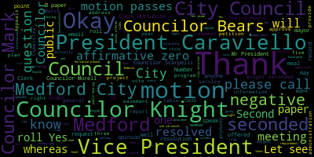
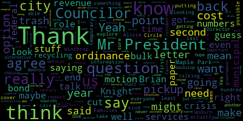
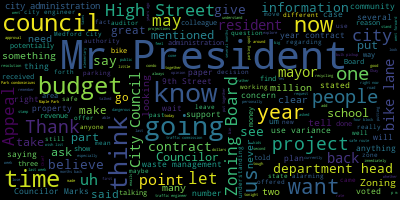
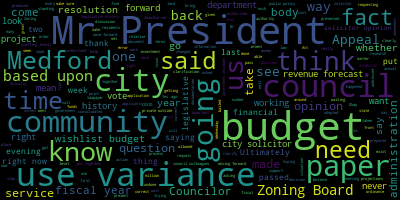
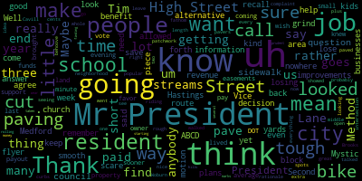
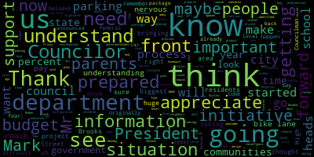

AI-generated transcript of City Council 05-12-20
English | español | português | 中国人 | kreyol ayisyen | tiếng việt | ខ្មែរ | русский | عربي | 한국인
Back to all transcripts
[Falco]: The 16th regular meeting of the Medford City Council will now come to order. Clerk, please call the roll.
[Hurtubise]: Councilor Bears. Present. Vice President Caraviello. Present. Councilor Knight. Present. Councilor Marks. Present. Councilor Morell. Present. Councilor Scarpelli. Present. President Falco.
[Falco]: Present. All seven members are present. At this time, I'd ask everyone to please rise to salute the flag. I pledge allegiance to the flag
[Hurtubise]: of the United States of America, and to the Republic for which it stands, one nation, under God, indivisible, with liberty and justice for all.
[Falco]: This meeting is being broadcast live on Channel 22 Comcast and Channel 43 Verizon. Pursuant to Governor Baker's March 12, 2020 order suspending certain provisions in the Open Meeting Law, General Law Chapter 30A, Section 18, and the Governor's March 15, 2020 order imposing strict limitation on the number of people that may gather in one place. This meeting of the Medford City Council will be conducted via remote participation to the greatest extent possible. specific information and the general guidelines for remote participation by members of the public and or parties with the right and or requirement to attend this meeting can be found on the City of Medford website at www.medfordma.org. For this meeting, members of the public who wish to listen or watch the meeting may do so by accessing the meeting link contained herein. No in-person attendance or members of the public will be permitted, but every effort will be made to ensure that the public can adequately access the proceedings in real time via technological means. In the event that we are able to do so despite best efforts, we will post on the City of Medford or Medford Community Media website an audio or video recording transcript or other comprehensive record of proceedings as soon as possible after the meeting, Hearings 20-343 Legal Notice City of Medford Five-Year Consolidated Plan 2020 Annual Public Action Plan Revised Public Hearing. This is a public hearing. A virtual public hearing via Zoom will be held by the Medford City Council on Tuesday, May 12, 2020 at 7 p.m. The purpose of the public hearing will be to invite the general public and representatives of public service agencies to express comments regarding the city's five-year consolidated plan and annual actual plan for community development and planning. The actual plan contains the proposed use of community development block grant CDBG funds for programming in 2020, which extends from July 1st, 2020 through June 30th, 2021. The consolidated plan includes broad goals and objectives to address priority needs with resources available from HUD, including a five-year strategy for use of CDBG funding for the years 2020 through 2024. The Office of Community Development will be requesting that the Medford City Council authorize Mayor Breanna Lungo-Koehn, official representative of the City of Medford, to submit the 2020 through 2024 Consolidated Plan and 2020 Annual Action Plan application for funds in all assurances and certifications to the U.S. Department of Housing and Urban Development. The city's applying for $1,574,868 in CDBG funds. Call 781-393-2501 for any accommodations slash aids. TDD 781-393-2516. Medford is an EEOAA 504 employer. At this point, I declare the public hearing open to those in favor of the petition. Is there anyone here that is in favor of the petition? Okay, if you could please have your name and address for the record.
[Hunt]: Good afternoon, Alicia Hunt. I'm the acting director of community development, 41 Watson Street, Medford. I also have with me this evening, Ashley Williams, who is the CDBG administrator for the city of Medford. I do have a small presentation that I can give the council if you would like me to do so.
[Falco]: Okay. At this point, is there anyone else in favor of the Is there anyone else here in favor that would like to speak at this point in time? Okay. Clerk Hurtubise, has anything come in through email?
[Hurtubise]: No, Mr. President.
[Falco]: Okay. At this point, I declare this portion of the hearing closed. Anyone in opposition of the petition? Is there anyone here tonight that is opposition to the petition? Yes. Are you in opposition to the petition, miss? Oh, no answer.
[Summers]: No, I was just checking. I was just wanting to watch. Sorry.
[Falco]: No worries at all. Is there anyone in opposition of the petition? Clerk, Hurtubise. Any communication or email from anyone in opposition?
[Hurtubise]: There are no emails at all on this topic.
[Falco]: Seeing and hearing none, I declare this portion of the hearing closed. Alicia, if you'd like to present now or make your presentation, please, you can do that right now. Thank you.
[Hunt]: OK. Mr. Clerk, I have some. I just put the information on slides to make it easier for you committee, if you can let me know if I can share that.
[Hurtubise]: You should be all set now to share your screen.
[Hunt]: Yeah, there we go. Thank you. So the members of the council will remember, and for the new members, our community development block grant funding every year requires that we submit an annual action plan, and the director comes before you and submits the funding. Every five years, we also have to submit a consolidated plan that is our five-year strategic plan for how we will be spending money over the next five years. of CDBG funding. This is a process that was started essentially a year ago, and I just wanted to just very quickly give you some highlights of that so that you're aware of the background for this, particularly for the new members, but also because this is only done every five years. There is a five-year consolidated plan we'll be submitting to the federal government that was introduced to the public in mid-March through a public meeting that we held, and has been on our website and available from Ashley since then. That plan is 101 pages long because of the formatting that the federal government requires in it. So very, very briefly, I have a few slides to tell you. It includes the process at how we came to here, a needs assessment of the community, a market analysis with demographics, and a strategic plan. The needs assessment was started around this time last summer. This time last year, we are part of a five community coalition with Malden is the lead agency that revolves particularly around our home housing funding. So they hired a consultant who went out they did a needs assessment. which included stakeholder interviews, web-based survey, public sessions, including March 11th, and then today, public comment, which has been open since March 11th, and Ashley received comments. And then we are able to incorporate any comments that are submitted today. We then look specifically at our non-housing needs. The consortium looks at the housing needs, the needs that were listed by the consultants who did the review, and just very quickly, public open space, recreation, facility improvements to make facilities comply with public safety and access standards, preservation and protection of environmental and historic resources, Um, updates to facilities, including firehouses, public schools, libraries, shelters to persons with special need and neighborhood facilities. Improvement to streets, water and sewer lines, flood and drainage, sidewalks, curbs and gutters, parking lots and tree planting. And then activities to assist businesses, including storefront revitalization are all things that were identified over the course of this process that are allowable expenses under CDBG. They looked at public service needs, which included transportation for those in need, affordable childcare services, access to food and emergency services, transitional housing, life skill building, supportive services and advocacy, English as a second language classes and job preparedness. The strategic plan that is in the 101 page plan, The first goal is to support the expansion and preservation of affordable housing. The numbers. The second goal is to increase economic development opportunities. The third is to enhance parks, public facilities and infrastructure. And the fourth goal is to enhance public services. To that end, the We put together a budget for the first year of the action plan. And so this, which was emailed out to the counselors, the goal lists a description of projects and the amounts. So for the affordable housing for this coming fiscal year, we're recommending and I'll just round $217,000. to increase, that's 14% of our allocated funds. The economic development opportunities, we're recommending 236,000, that's 15%. And this is a place where we would include some of the grants and assistance that we're talking about for small businesses, although we also have additional funding for that. Enhancing parks, public facilities and infrastructure, we're recommending $551,000. It's 35%. That is typically where Medford puts the bulk of its funds is into this category. And then the public services, we are typically, you may all remember, limited to 15%. This year because of the health emergency that cap was lifted. So we're actually recommending 16% this year and that meets the needs of the public service agencies as they expressed it to us on that's $255,000, and then planning and administration. and that includes staff salaries, consultants, the housing production plan, and that's $314,000. The planning administration is capped at 20%. I'll then remind you that we had the public service agencies presented on virtual hearing in April, and they spoke to these dollar amounts. And so this is the amount of money that we are recommending because they lifted the cap, rather than nickel and diming the agencies altogether, they requested 16% of our funding rather than 15. And we said, let's just give them the 16% this year, because we're allowed to do that as an exception to the rule this year. Um, so what is not in this plan, and I kind of wanted to call that out, but also share with you is the, um, CDBG coronavirus funding. So we got, we're getting extra funding this fiscal year, um, because of the health emergency. So we did do a grant round to our public service agencies for that. And so the third page on the handout that you received via email, and then I'm showing on the screen now. is what was requested of the coronavirus funding. It is not part of our regular annual plan, but I wanted to include it so that you'd be aware of this. Um, housing families is requesting an extra $52,000 as cm transportation is asking for 12,000. The mold and why, and I must point out that they've, they run the mystic community market which is our largest food pantry in Medford. They're asking for just shy of $62,000 from the coronavirus funding. And we've determined that Medford's are you okay program that's being run out of City Hall. We, we spun that program up without knowing how exactly how we were going to pay for it because we knew we needed it in this emergency situation, and we can fund it through this program. And so that's $21,000. So those are the recommendations of the community development office and the mayor for this year's annual annual funding for this community development block grant. I'll just stop there.
[Falco]: Move for approval, Mr. President On the motion of councilor Knight. Councilor Bears. On the motion council Knight, seconded by Councilor Marks, Councilor Bears.
[Bears]: Thank you, Mr. President. Alicia, just a quick question. Are we voting on the additional stuff that you just presented to us or is that coming at a later time? The COVID stuff.
[Hunt]: I apologize, I had hit mute. I'm always nervous that my children are gonna make noise while I'm trying to speak with you. It's not, it does not include the COVID funding. I don't believe we're actually going to need a city council vote on the COVID funding. That's my understanding right now, but I wanted to present it to you so that you would have that information as well.
[Bears]: Got it.
[Falco]: Thank you. Any other questions from the council? Okay. Clerk Hurtubise, any questions that have come in through email?
[Hurtubise]: There are no emails on this topic.
[Falco]: And it doesn't look like anybody else wants to speak. On the motion of council and I seconded by Councilor Mark. Please call the roll.
[Hurtubise]: Councilor Bears. Yes. Vice President Caraviello. Yes. Councilor Knight. Yes. Councilor Marks. Yes. Councilor Morell.
[Falco]: Yes.
[Hurtubise]: Councilor Scarpelli. Yes. President Falco.
[Falco]: Yes. And the affirmative zero and the negative the motion passes. Move suspension of the rules, Mr. President. Thank you, Alicia. On the motion of Councilor Marks to suspend the rules, seconded by?
[Hurtubise]: Second.
[Falco]: Councilor Scarpelli, Clerk Curtis, please call the roll to suspend the rules.
[Hurtubise]: This is to suspend the rules. Councilor Bears?
[Bears]: Yes.
[Hurtubise]: Vice President Caraviello? Yes. Councilor Knight? Yeah. Councilor Marks? Yes. Councilor Morell? Yes. Councilor Scarpelli? Yes. President Falco?
[Falco]: Yes, seven in the affirmative, zero in the negative. The rules are suspended. Councilor Marks.
[Marks]: Mr. President, I move suspension of the rules to take paper 20-355, which is on the agenda tonight. We have the city engineer here to present regarding safe routes to school project.
[Falco]: Thank you, Councilor Marks. Communications from the mayor, 20-355. Dear Council President Falco, and honorable members of the Medford City Council. As you are aware, the city is working in coordination with MassDOT to plan for safe routes to school project for the Brooks Elementary School. The project involves improvements to sidewalks that directly abut private residential parcels. The federal funding granted for this project requires that the right-of-way be in complete ownership and physical control of the city. The survey prepared for the project identify 12 private properties that contain public infrastructure or require a temporary construction easement. In order to meet the requirements of the projects, permanent easements will alter the High Street, Mystic Street, and Walcott Street layouts to encompass the public infrastructure in temporary easements with will facilitate construction of sidewalks. The written offer was sent to the 12 property owners via certified mail on April 2, 2020, and Tim McGibbon, City Engineer, has been in contact with each owner to address concerns throughout this process, starting from the initial contact letter back in December 2019. easements were appraised by a certified general appraiser and those appraisals were reviewed by a certified general review appraiser to establish just compensation for the easements. I respectfully request that the city council vote to approve the attached order of taking associated with these easements at your regular May 12, 2020 meeting and therefore approve the alternations of High Street, Mystic Street, and Walcott Street. The alternations of High Street, Mystic Street, and Walcott Street are approved by the Mayor and recommended to the City Council by the Community Development Board via unanimous vote on March 25, 2020. Mr. McGibbon will be in attendance to answer any questions on this matter. Sincerely, Breanna Lungo-Koehn, Mayor. Additional documents may be inspected in the office of the city clerk, Bedford City Hall, Bedford, Massachusetts. Okay, let's see. We have a city engineer with us tonight, Tim McGibbon. Tim, I don't know if you want to maybe speak to this a little bit, or if the councillors have questions, we can go with the questions. But if you want to lead off with what we're doing, that'd be great.
[McGivern]: Certainly, I'll lead off. And thank you very much for suspending the rules for me here. Wonderful. So I think all councillors know, I think I spoke with just about every one of you between over the last couple of weeks, basically. And this is a milestone in a process that started in November, really. The first letters went out in December, as noted in the letter. And the process is defined by MassDOT what's called a right-of-way certificate. And it's basically any public infrastructure, such as the edge of a sidewalk, for example, which is the case, a lot of the cases with these easements, needs to be within the public right-of-way to have the project move forward. So, most of these easements, the permanent easements anyway, are alterations, minor alterations of the high street layout and the intersections with Walcott and Mystic Street, which are all public laid out, public accepted ways. So, the process as defined by MassDOT as well as our local procedures, you know, You said a lot of it that's written in the letter, but basically we notify all the owners of the property. We did that back in November. I personally interviewed each owner in person to answer questions, hear concerns. We performed title exams as well as the extra step of certifications, title certifications. We also performed appraisals with a special certification, a type of appraisal, and then had those reviewed by basically a third party review appraiser. And then on April 2nd, we made written offers to the owners and we had the Community Development Board also recommended and endorsed the plans for the easements. And once we're approved, assuming that we approve here, it would then get recorded and payment would be tendered to the owners. The, I think there's a couple of things just to note there are basically two types of easements, and then within the permanent easements is two types in there too so basically this temporary easements for construction, and that's for a temporary time period, it's five years, the way we wrote the order. And that allows the contractor to set a form at the back of a sidewalk, for example, or repair a walkway that may go from the sidewalk onto the private property, things like that. And then there are permanent easements that alter the Hyde Street right-of-way. Most of these are slivers of private property where a public sidewalk is on private property. So it's basically a correction of the right-of-way. And then there's one more, and that is we're converting the Hastings High Street intersection from a private way to a public way. So the whole intersection becomes public. So those are a couple of the larger permanent easements. That's it, this is one step and one item and one milestone for the larger Safe Routes to School project that has been going through the different milestones as time goes on. So I'm happy to answer any questions. I also have a bunch of material if we need to reference anything or pull up anything on the screen, so.
[Falco]: Thank you very much. Let's see, we have Councilor Morell.
[Morell]: I think Councilor Knight actually had his hand up first.
[Falco]: Oh, I apologize Councilor Knight.
[Knight]: Mr. President, you're the chair you can pick what you want so it doesn't matter to me.
[Morell]: You want to go first it's fine with me. Thank you, Mr. President. Just question for Tim remind me about the, the easements as far as the, the funding for the minor easements remind me just what that amount is and where it comes from.
[McGivern]: to be able to use that money for other things. Is it appropriate use of that money?
[Knight]: Mr. President, thank you very much. So Tim, as I understand the project that's before us this evening, the only matter that the council really has the purview to vote on this evening would be whether or not we authorize the land taking. Is that correct?
[McGivern]: That is correct. Yeah, it's a pretty narrow purview tonight. And it is, yeah, to establish the easements and the order of taking and therefore the alteration of those three roadways.
[Knight]: And I did hear in your presentation that a hundred percent of the property owners that are impacted by this have signed off on the project There's there's no actual sign off counselor night.
[McGivern]: I have talked to all of them. They are in favor of In general they're in favor. I cannot speak for them Some of them may be here tonight. They are aware tonight. They are aware of tonight They were notified through the the process statute and and I also went the extra mile and called them and made sure they knew about tonight as well. I haven't received any comments or letters or emails that would demonstrate that they are against granting easement or take issue with the damages proposed. There was a 30-day waiting period to confirm that fact. So, and I didn't receive any further information from any of the property owners in the 30 day period. I would guess that they're pretty okay with receiving the money for doing very little.
[Knight]: So, but you've, so have you had, has their personal contact been made with 100% of the people that are going to be impacted by this? Yes, that is correct.
[McGivern]: Yes. All right.
[Knight]: I just, you know, I don't want to see this thing, say we vote on it tonight and then tomorrow someone saying, what the hell are they doing on my front lawn? You know what I mean? I want to make sure that everybody's well aware. Communications have been a strong suit in the city of Medford when it comes to certain aspects of construction projects.
[McGivern]: this particular, and it's a good point, Councilor Knight, this particular project, it's unavoidable. I've been in constant contact and actually have to submit diaries for each owner to MassDOT that gives the date, the topic of conversation. how I made contact, et cetera, et cetera, et cetera. So it's pretty strict. Some owners are more willing to talk and chat and meet than others. And some have much more questions. Some of the owners, you know, they just kind of going through the motions. So it depends on each owner. And this funding that we're receiving, it's about a million bucks, you said, and it's going to be coming from the state? The project is about, I think the number is $1.2 million. A portion of that, I think a significant portion, I don't know the exact number, I apologize, is federally funded. So most of it is federally funded, and then the state is making up some, it's the $200,000 and $300,000. So it's not city money for this project, and we actually don't even need to execute the project. Once the project begins, we'll be providing oversight, and I'm the representative for those property owners moving forward as well with the project. Is that how that works?
[Knight]: So based on the current financial state at the federal and state level, is that commitment for those funds still there?
[McGivern]: I have not heard otherwise, and I did ask that question, and it remains status quo.
[Knight]: OK. And the last question that I have, and I promise it's my last question, would be, what's the estimated cost to the taxpayer for the completion of this project? You said it's about $83,000 in Chapter 90 funds that we're going to be using from our budget that would go to roadway repairs for this project. Is there any other expenditure that would have to come out of the city's coffers in order for us to complete the project?
[McGivern]: Besides sort of my time, my staff's time, and then... significant costs for fees, like, for example, I have to register, I mean, sorry, record all the documents, that's going to be $500 or something. Things like that. And then if the city chooses to piggyback on this project, other projects, which I will most likely recommend that we do, so what, you know, what we want to do between now and when that project gets executed is making sure that
[Knight]: You know if there's any water valves that need to be replaced we replace them things like that In terms of just the scope of the grant, you know, I mean, I'm not worried about other structure projects that might come along with it I mean if we're planning smartly, I would hope that that's what we do I would hope that if we're gonna up the street that we go on the ground and we fix the underground infrastructure to Yeah, but in terms of the funds Yeah, okay All right, great. But it wouldn't exceed $100,000 is what you're telling me based upon the 83,000 from the Chapter 90 funds and then any ancillary costs.
[McGivern]: Right. And we did also spend money out of Chapter 90 to hire the appraiser and the title certification. But that money that we spent already, we're not going to spend in the future.
[Knight]: Right. It's already been That money's out the window already.
[McGivern]: Out the window, yeah. We needed to spend a certain amount of money in order to get the 1.2 mil.
[Knight]: Right, okay. All right, so in terms of the overall investment that the city's made in the return on the investment, we're looking at making an investment of maybe somewhere around $150,000 for the total cost to the community, and we're getting a million point two back? Yeah, that's a good way to put it, yep. Okay, excellent. Thank you, Mr. McGiven. I appreciate it. You always do come prepared. Thank you.
[Morell]: Thank you. God's all night. God's love. Morel. Thank you, Mr. President. Just a few more questions. So, Tim, if you could remind me just procedurally what the steps are as far as between now and you know if this project's approved, uh, or what levels it has to be approved for work to actually begin. So I understand it's been approved by the mayor and then tonight we're voting on orders of the taking. Is there are there any additional things that the council has to vote on? And what stands between now and if the project were to start?
[McGivern]: Sure, um, so, so far we have approval by the mayor approval by the planning board approval by the traffic commission, and then hopefully after tonight approval by this entity, and then after this. Once we get the right-of-way certificate, there are a couple things we have to do, record the documents, tender payments, things like that. MassDOT holds the reins on the project. And as far as I understand, this is one of the last pieces they need to advertise for bid. So once they advertise for bid, the train has left the station. and the project is moving forward. It's gonna take a while to get from advertise the bid to shovel in the ground. But all the approvals sort of, the traffic commission was the, for example, the regulatory approval for the change in the traffic, the change in the parking. And then this would be the approval for the land rights transfer. and then obviously planning board has to make that recommendation. So this is one step in that process. And I don't believe that there would be any other council action. And I'm not 100% certain on that, but I believe that is the case.
[Morell]: Okay, thank you. And remind me, these funding opportunities through Safe Routes to School, They're very competitive. How many about, do you know, are given out across the country, uh, are awarded, um, yearly or how often they're awarded?
[McGivern]: I do not know the answer to that question. Um, Todd Blake is in attendance. I'm not sure if he knows the answer. Um, Todd, if you do, could you chime in? I don't know if he does, but he might, I don't.
[Hurtubise]: Okay. Todd, would you know the answer to that question? Todd?
[McGivern]: I do know it's a competitive process and one of the things that they're looking for is to make sure that the municipalities are ready because I think there's other municipalities that want this money. So we were lucky to win this
[Falco]: Thank you, Councilor Morell. Vice President Caraviello, then Councilor Marks. Vice President Caraviello.
[Caraviello]: Thank you, Mr. President. Tim, what would be the average payout to the property owner for these small pieces of land?
[McGivern]: Sure. The average is tough because it ranges from $50 to, I think one of them is $24,000. So the average is not really an average. But anyway, that's the range. So most of them are in the thousands of dollars in the three figures, $4,000, $5,000, $8,000. A couple of big ones. One's $24,000, like I said. I think one's $16,000. The total is $83,000. The smallest is $50,000. And there's a couple of that are $150 in the hundreds. And those are one square foot, 10 square feet, five square feet, things like that. They're very, very small ones. So the big ones are for the temporary easements because temporary easements are larger in square foot and they're paid out a little bit differently. They're assessed a little bit differently. So they're bigger.
[Caraviello]: And again, where are these funds coming from to pay the easements from us or the DOT?
[McGivern]: These are, these are chapter 90. We're going to use chapter 90, the state allocation for roadway work. Okay.
[Caraviello]: And, um, you know, Tim, uh, I am going to vote in favor of this this evening. Uh, my only question is, um, I, I wish the city council had been brought into this, uh, a little sooner. So we knew what was going on rather than at the last minute. And I support all the sidewalk and street improvements. I mean, I've lived in this neighborhood for 40 plus years, both on Hastings Lane and where I am now off of Mystic Street. So my kids all went to the Brooks School. They all walked to school. I don't ever remember seeing a lot of kids riding their bike to school. So and that's really the my only uh complaint is um We're doing a three block bike lane that goes to nowhere And that's really the only I mean they say the sidewalk improvements the curbs everything else is is a great idea And I and I I that is a but again, I just I don't fathom uh, the rationale of a three block uh bike route So, uh, that's then that's my two cents
[McGivern]: Understood understood and I think you know, I as I've explained I think to everybody Mastod has certain criteria The city has a complete streets policy and the bike lane ideally We've built a maybe a three or four block section of it. There is a plan a master plan For the whole city. So if you know in the future future projects extending that bike lane could happen I don't know but It isn't just going to be to nowhere forever. And even if it is to nowhere, it does provide a certain level of safety improvement for everybody. I hear you.
[Caraviello]: High Street is not the most popular bike route in the city of Medford.
[Hurtubise]: I hear you. I hear you. Thank you.
[Falco]: Thank you, Vice President Caraviello. Councilor Marks.
[Marks]: Thank you, Mr. President. And first, I'd like to applaud the Brooks School for, I believe it's been six years for this grant. And many of the improvements, 99% of them of which I agree with, will do tremendous in traffic calming and making a high street or a portion of high street safer to travel. So I do support a big portion of this, Mr. President. Tim, I had a question for you. We talked about easements. Also, there are several properties that are privately owned that have private property on city property. And I was told by yourself that the state was going to put out an agreement that they weren't going to go after property owners that may have encroached on city property. Could you just give us a little update on that?
[McGivern]: Sure. So one of the requirements that MassDOT had at the beginning was to secure all encroachments. What that means is you either need to remove the encroachment from the public way or enter an agreement with the property owner to allow the encroachment to stay. Encroachments are basically a form of trespassing. You have private property and someone else's property, in this case, the public way. So there was 29 of those. And myself and the city solicitor spent some time looking at this, researching it, digging into it, talking with MassDOT. And at the end of the day, the retaining walls, which run the length of High Street down this corridor, have been there for quite a long time. We have plans from 1908 that have those walls on them. So MassDOT was convinced that they are, quote, monumental walls. So basically helping to establish the extensive high street. Those walls have been there, part of those private parcels, and part of the way for 100 years or more. So basically, MassDOT's not requiring that we get those encroachment agreements. They don't really fit quite well into the idea of what an encroachment is. And there are statutes out there that protect walls and property that was built before a certain I'm not going to be able to do that. I'm not going to be able to do that. I'm not going to be able to do that. I'm not going to be able to do that. I'm not going to be able to do that. to collect them. I have received some back and the property owners that received those encroachment agreements, if they want them, we are more than willing to entertain that and get them signed and make them real. There's no harm in that. And that's something that the property owner can say, am I okay with status quo, having a little bit of the face of my wall in the public way? It's been like that for a hundred years. or do I want to enter an agreement with the city to add that extra level of protection? You know, at this point, we're leaving it up to the property owners, and I'm going to circle back with the city solicitor and see if we should be following up on all those anyway to help protect the city and those property owners. It may be a good thing to do, but at this point, we're sort of pressing pause on that until, you know, until I actually have a chance to write a letter to all of them and say, hey, you know, if you still want this, we can go ahead and move forward with it.
[Marks]: Okay, so just so I understand then regarding this current project of St. Ruth's to school, there will be no property, city resident property that will be taken.
[McGivern]: by DOT or by any other entity. That's correct. Yeah, we're not going to remove any encroachments. So these walls are monumental walls. They're part of establishing that high street right-of-way. It's similar to how you have other monuments that sort of establish bounds. So there would be no taking or removing walls, removing fences or any of that. No.
[Marks]: Um, and Mr. President, if I could, I know there, uh, were a number of concerns by, uh, residents, area residents on high street and some of the, uh, budding streets. Um, the traffic commission, uh, had a meeting, uh, several months back regarding, uh, the taking of parking spots along high street. Uh, so this project can move forward. I know many residents voiced their concern, um, naturally. Parking is at a premium, and let's face it, no one wants to lose a parking spot. And we as a council voted unanimously, I believe it was several months back, to ask if DOT and the city could get together and see if they can explore some other options where we may be able to save some parking along High Street. And apparently that didn't bear any fruit, those discussions. However, Mr. President, at the traffic commission meeting, there were several residents that brought up to the traffic commission whether or not they could take a bike lane. And during non-peak time, for instance, 7 p.m. or 8 p.m. at night, have it revert to parking, area parking from 7 p.m., 8 p.m. at night to 6 a.m. or 7 a.m. in the morning. And the traffic commission said they were going to look into it. I had a discussion today with Chief Buckley, and he reiterated his concerns that, first of all, that DOT made it clear that this project had to have a bike lane. And none of us want to jeopardize a million dollars. However, I did ask him if the traffic commission was going to explore possibly turning this bike lane for non-peak hours into parking spots. And he said they are going to explore that. So I did get a reassurance from Chief Buckley today that that was under advisement. The second piece I just want to touch upon, as Councilor Caraviello mentioned, I received a number of emails from people today in support of the project. And like I said, 99% of this project I do support. The one concern I have, Mr. President, which I found a little terrifying in several of the emails I received, is residents saying that they now can have their elementary school child use High Street to bike to school. That really concerns me, Mr. President. I'm not one to put a rubber stamp on anything. And the fact that we may be able to get money for this project is great. And the fact that this project has a big public safety component in it is great. And the traffic calming component is great. The one concern I do have, Mr. President, and I know the city engineer said we have more plans to extend our bike lanes. The reason why we were told at the beginning the bike lane was going to be on that side of High Street was that it's the safest side because when you have bicyclists traveling, for what we were told, you want them, because they're going at a slower speed, to travel uphill rather than downhill. And that made it for a safer area and that's why they decided to make the bike lane go up High Street rather than down High Street. That was my understanding. My concern is, Mr. President, if residents feel comfortable now having their child bike to school, especially elementary kids on a very, very busy road on High Street, we have a four-block bike lane that goes up High Street, which is the slow part when you're riding a bike, and all of a sudden it stops at the top by Hastings Lane. And it goes into the downward slope down High Street and a very winding, dangerous part of High Street, extremely dangerous. And I think we'd all be negligent if we didn't step up and say, you know what? If we're going to do the bike lane, for the very least, we should extend this, whether it's part of this project or part of the city project, whatever it might be. I, in good conscience, have a tough time saying, OK, we'll accept the money, we'll put the bike lane for four blocks, and no one will be the wiser. Because I foresee a problem, Mr. President, especially if residents think now we're creating a safe zone for children to ride their bikes. That is not a safe zone. And the way it breaks off, Mr. President, if anyone's familiar, at the top of Hastings, then it winds down. That is a very dangerous area to all of a sudden have a bike lane stop, especially for young kids. So I'd like, Mr. President, to offer a motion tonight that we as a city, if we're going to move forward with this project,
[Hurtubise]: that we move forward and also extend that bike lane, Mr. President, all the way down High Street.
[Marks]: And I'll leave it up to the city engineer. I'll leave it up to the traffic engineer to decide when to get to Winthrop Circle and so forth and let them decide the logistics of it. But I can't have in my conscience to leave a bike path just because it's getting funded for four blocks. We should turn a blind eye as a city and say, well, that's fine with us. That's great. We're not going to turn down the money. We should step up, Mr. President, to the plate. And if you're talking about spots, there's no loss of parking spots on that point of High Street that winds down. That would be an ideal place to continue the bike lane. And then when we tell parents, we're creating safe routes to school, we're really creating a safe route. Because four blocks that leads to an area that's a dangerous area is not a safe route, Mr. President. And so I'm going to offer that tonight as a motion that, you know, I'm going to support this project, but it has to be, Mr. President, that we have our city engineer and we'll ask the mayor, because the mayor presented this paper to us, to give us a commitment that that bike lane will be extended, Mr. President, not in the future, but now as part of this project. And if the city has to pick up the cost, then so be it, Mr. President.
[Scarpelli]: Second that motion, Mr. President.
[Falco]: So Councilor Marks has offered in a motion as a B paper to the main paper that has been seconded by Councilor Scarpelli. Clerk Curtis, do you have the wording in that motion?
[Hurtubise]: The B paper is to extend the bike lane all the way down High Street with, I mean, and then there was with additional input from the city engineer and the administration.
[Marks]: Mr. President, the reason why I say that, I'm not a traffic engineer. I'm not a parking engineer. But clearly, Mr. President, that is not the right thing to do. And I don't have to be an engineer to make that decision. Leaving it the way it is is not the right thing to do. So that's what we have to do as a community, Mr. President. And if we're going to make it safe, I realize we can't make every road right now. But if we're going to do this project, and call it Safe Routes to School, and I have parents that have sent him emails saying, you know, I live near Meffitt Square, and thank goodness my son can take his bike now to school. I'm concerned with that, because guess what? I'm putting my stamp of approval on that. And I don't feel safe, Mr. President. And no one's going to tell me otherwise. No one's going to tell me otherwise. Point of information on that big paper?
[Morell]: Point of information, Councilor Morell. Is that conditional saying, well, like, you'll only vote for this if, or that's a suggestion on top of? No, that's not what I said.
[Falco]: That's not what I said. It's not conditional.
[Morell]: Okay.
[Falco]: It's not, it's not, that's not conditional. Okay. Thank you. Thank you. Councilor Scarpelli.
[Scarpelli]: Thank you, Mr. President and thank you for the I appreciate council marks bringing this forward. I know that We've talked to many residents who? felt a little slighted Tim with the taking of those parking spaces and We can understand the biggest the biggest draw for myself as well as the bike lane is the intersection of Ruben Street and High Street and having an identified crosswalk and a uh an area now that people are going to have to stop the way they're going to reconfigure that area so i think that is a huge plus it's a it's a to me a huge safety issue we have right now um and and with council mox's uh remarks with the with the with the turn I think it's very important and I too was I to talk to a few of the neighbors and the Request I appreciate how it's a mark soon as homework and getting chief Buckley to read to consider the parking overnight I think that's important. So Again, it's all the Brooks parents. We we heard you loud and clear It wasn't at any point that we thought that you know, we don't want to move forward with such you know an initiative, but we also have to make sure that They had to know that we got into this game really late. And again, once you've clarified the hundred residents that have been informed and have an end product with the taking of the land, the continuation of the bike lane to make it a true bike lane where I too shared Council Mark's concerns with the dangerous situations. And then looking into that evening parking and the configuration of the high movement, I think it's a no-brainer. So I too will support this project. And again, I thank all the Brooks parents that originally started this years ago, because I don't know if any of the parents that originally started this project are even in, you know, their children still go to the school. So again, I applaud those parents and moving forward with this initiative. So thank you.
[Falco]: Thank you, Carlos Scarpelli. Tim McGibbon has a comment.
[McGivern]: Yep, I just wanted to talk just real quick. I'm already, one of the things about the removing of the parking and I've already talked to some of the people that are concerned about that. And one other thing that we can kind of layer on top of, you know, having traffic commission look at the nighttime situation, but also I'm trying to help one of the property owners with looking at her property. The properties there are big enough and the driveways are, to be such that there's things that you could do on-site, too, to increase how much parking you can have on the site. So I'm working with at least one resident on that piece, too. So that's available. If there are residents who are very concerned about losing that spot for a certain amount of time and want to explore on-site parking, they should call my office and we could talk about it. I can look at their property and try to help them with that.
[Falco]: Thank you.
[Bears]: Yeah.
[Falco]: Councilor Bears.
[Bears]: Thank you, Mr. President. I just want to second, thanks to everyone who advocated for this. I was in the first, fifth grade at the Brooks, and I can remember how dangerous it was even then as a 10 year old. I had two questions. One is just about Councilor Marks' motion. Would that just be between Winthrop Circle and the Woburn Street intersection?
[Marks]: Is that question for me? Yes.
[Falco]: What's the clarification on that on that B paper?
[Marks]: Mr. President, I'd like to leave it open ended because, you know, we may be also talking about the other end of high street as well. So, you know, as I stated, I'm not a traffic engineer, but really it doesn't make sense for us to put a stamp of approval on something that I don't, I don't believe is safe in particular for elementary school kids to be riding. So I'm going to leave that open ended. It's not contingent upon approval, but, um, you know, I hope Tim takes this back to the city administration. and let them know that something needs to be done immediately there. Even though there may be long-term plans, something needs to be done immediately with this project.
[Bears]: Yeah, no, I totally agree. And I'm actually, I think, leaving it. I would be encouraged to see both sections of how we could do that. I agree. So just wanted to make sure on that. And then Tim, kind of similar question, just what would it be possible to, what would it take to do that in your estimation?
[McGivern]: Well, whenever we try to do that, anyway, whenever we're repainting a street or resurfacing, we measure. We go out, we measure. Folks in my office, Todd, bring some money, they go out, they measure. If there's room, we'll try to see if we can add a five foot wide bike lane. If there's not, four foot's an option, but that's not ideal. So we do try to take a look at that. So we'd have to measure the road We have to look at the the topography look at the intersections Take a look at the master plan that the bike Commission did see see how it lines up with that So we would do exactly what counselor Marx is is alluding to and we would take a look at it Break out the paper and the pencils and the calculator and see what would work I Agree with the sentiments of just having the bike lane and it's not ideal However bicycles can be in that road anyway, so there are they go from their own lane to a lane that they're supposed to be in anyway and I think if people in just in general if and I and I I agree with mark council marks it we can't tell people what to do right and then they may or may not do it if someone tells their child to go ride in the bike lane and and they're in danger. That's probably not a smart thing to do. Bike lanes, travel within roadways with traffic. The bike commission that I was on, it always says that's really for the more experienced cyclists, children, things like that, children and people who aren't experts or not even close to experts or whatever. Sidewalk might be more appropriate for that. So anyway.
[Bears]: All right. Thanks, Tim. When you look at it, if we could look at something temporary, at least in between Winthrop Circle and Woburn, maybe just if we're not resurfacing, could we do temporary paint? Just kind of thinking of that as a focus area.
[McGivern]: Yeah, we would do that. We definitely could do that. I'm actually excited that this was brought up and this B paper was made, because I'm in agreement. I think we should try to extend it as far as we can. Thank you. Thank you. Thank you. Thank you.
[Falco]: Thank you. Thank you. Thank you. Thank you. Thank you. Thank you. Thank you. Thank you. Thank you. Thank you. Thank you. Thank you. Thank you. Thank you. Thank you. Thank you. Thank you. Thank you. Thank you. Thank you. Thank you. Thank you. Thank you. Thank you. Thank you. Thank you. Thank you. Thank you. Thank you. Thank you.
[Hurtubise]: Thank you. Thank you.
[Falco]: Thank you. Thank you.
[Bears]: Thank you. Thank you. Thank you. Thank you. Thank you. Thank you. Thank you. Thank you. Thank you. Thank you. Thank you.
[Hurtubise]: Thank you. Thank you. Thank you. Thank you. Thank you. Thank you. Thank you. Thank you. Thank you. Thank you. Thank you. Thank you. Thank you. Thank you. Thank you. Thank you. Thank you.
[Falco]: Thank you
[McGivern]: Maybe type it, Todd, if you can.
[Hurtubise]: Yeah, if you want to type it in the chat, maybe that might be the best bet. Okay, so while we're waiting for Todd to make his comment, Councilor Lange, did you want to make a comment?
[Caraviello]: Vice President Cavill. Thank you Mr. President. Tim, I remember when we looked at the plans and they showed the paving, it was kind of like a patchwork paving. Is that going to be paved from Woburn Street and Hastings Lane all the way down to the school? in one pave rather than every intersection get a nice smooth pave, then we get the rough and then we go to the smooth. I recall when we looked at the plans, that's how they looked, is they talked to get a pave all the way from that whole length right to the school.
[McGivern]: Right, it is still like that and just so everybody knows we traded pavement for RFPs, which we felt were much more appropriate for safe routes to school to increase that pedestrian crossing safety. So we took, move money out of pavement and into RFPs on the project. So we do the project what's getting funded by the project, you're right, the intersections are getting repaved, and not between the intersections. So we are exploring what to do between the intersections. And, you know, we don't, we don't have a solution quite yet. But by the time construction starts, we intend to have a solution. So stay tuned. I think, well, I don't want that as well. I don't want a nice brand new intersection.
[Caraviello]: And then, I mean, we're probably looking at maybe a 20 yards of 30 yards of paving, extra paving in between those few streets. It would just behoove us while the pavers there just not grind. They grind all the way down and rather than leave those little spots in the middle open. Because they say, you know, High Street hasn't been paid for many years. And if you see it, you know, we're starting to get the wear marks, you know, the rolling hills in several areas of High Street. So again, I think it would be the prudent thing to do. And again, you know, I said, I know this is going to be a tough year finding money for things. And if that can be taken into consideration, I think it would be helpful also.
[McGivern]: Yeah, we talk about it a lot in our office, and it was a trade-off that I think was the right one, but now we have this little bit of a gap in the pavement, so we are working to address it, so thank you.
[Falco]: Thank you, Tim. Thank you, Councilor Caraviello. If I may for one minute, let's see, City Clerk Hurtubise, I believe you received a message from our traffic engineer. Could you read that?
[Hurtubise]: Yeah, absolutely. He says next steps, point of information, traffic commission would be involved in any extension of the bike lane beyond what was already approved by them. Okay. Thank you.
[Falco]: Councilor Knight.
[Knight]: Mr. President, I think based upon what I'm hearing from my colleagues that this thing's ready for a vote and I'd move for approval of the paper. Second Mr. President.
[Marks]: Okay. Mr. President, we may have some, residents that like to speak. Yes.
[Falco]: I'm going to call on them right now. Uh, so let's see. Is there anybody that would like to speak? Yes. Uh, right here. If you could please press for the record.
[Pasatempo]: Yes. Hello. Hi. I am Camille Pasatempo and I live at three 60 high street. So this is, um, impacting my living. Um, The parking is going to impact me a lot. I have tenants that live downstairs I have an 80 year old tenant and that means that she's going to have to pack across the street in Order to get home to cross the street on a busy You know in the busy road now and for her to come into the house. I have two other tenants that, you know, work until 1030 at night. And again, it's them parking across the street and having them come into their own home. There's no parking on the side streets, Mystic or Auburn. I have six cars already parked in my driveway. So this is going to impact me and my, you know, the way that I live. I've lived here all my life and believe me, I know high street is very dangerous. I mean, my sister got hit by a car 50 years ago on high street. I raised my kids here, but I did not like the way the city handled how they took away the parking. We literally got a notice, this was the notice, two weeks before the traffic commission took a vote. We had two weeks, we didn't know what was going on. They had the vote, they had the meeting at two o'clock in the afternoon on a Tuesday. So of course a lot of people couldn't attend. We went and in 20 minutes my parking was gone. I mean, I don't feel like we were notified about this project. We had no idea about this project. And, you know, people, it's great. I mean, you want to have your kid ride a bike on high street to go to school. It's supposed to be the safe school. And Mike and Councilor Marks, thank you for making that recommendation for the overnight parking, which would help. It really would. But to take away 19 spots, it will really impact us and a lot of the people on the street. And I know that the engineer department, they said that they did a survey, which I have right here. They, for a week, they looked at the parking situation in January and that there were plenty of parking spots across the street, but they did not take in consideration in the summer when people park here to walk down to the commuter rail or take the express bus into Boston, because this is what happens. Those parking spots go away. So we're going to have a problem on High Street once this project goes forward. So that's all I wanted to say. Thank you for listening.
[Falco]: Thank you very much. Let's see, who else wanted to speak?
[Hurtubise]: Please raise your hand if you'd like to speak and I'll... Oh, yes. If you could please have your name and address for the record.
[Summers]: Sure, Patti Summers and it's 304 High Street in Medford. Thank you. I just wanted to speak on very much similar to Camille Pasatempo. I've been here for 25 or 26 years, And I mostly park in my driveway, but I do have a mother who is wheelchair bound that I have care of a couple of days a week. And so I need to be able to pull her up in my driveway is where I get her out onto the sidewalk and then get her up to the back of my yard. Um, she also is, uh, has dementia. So she's not able to understand for me to say, I'm going to take you out here and run you across to the other side of high street. So it is an issue for me as far as parking goes. But I want to tell you, honestly, having lived here for 25 years, um, I worked from home always and had my office on the very front of my house for a good 15 years. My children are now grown, so I feel, you know, okay, as far as my kids go, but honestly, any parent that thinks that, or anybody, any adult that thinks, or a city person that thinks that this four block bike lane is smart for children and safe for children, you're definitely mistaken. I can't tell you how many times the T sign that's in front of my house has been leveled. how many times the tree in front, so many times the tree in front of my house that the city stopped replacing the tree. I'm the only house here that doesn't have a tree for years now. Councilor Marks is 100% correct. This is not safe for children. My kids are grown, so I don't have to worry about my own children. And I know $1.2 million is a lot of money for the city, but I will tell you, it'll cost you $1.2 million for the first child that's killed outside here. this intersection here, and I know you might think bump outs are going to help. It's just not a smart decision. It's just my opinion, but I've been here for 20 something years and I see what the traffic is like out here. It's just not wise. And what are you going to do with a child who hops on their bike at Brooks School and the lane stops in front of my house? and they realize, oh, I forgot a book, or I forgot whatever. Are they then gonna get on their bike and have to pass other children in that same bike lane to go back to the school for something? None of it makes sense. I understand that it's a lot of money, I really do, and I'm sure the city could use it, but it just seems like there's gotta be something smarter if it really has to do with the safety of children. It's just not, I don't know, it just doesn't seem like a wise, wise thing to do. And I thank Councilor Marks for, you know, really thinking about it and knowing if it's really something that people should be saying yes to.
[Falco]: Thank you. Thank you. Any other questions or comments? Okay. Please have your name and address for the record.
[Brown]: Hi, my name is Sue Brown. I'm at 127 Pine Ridge Road in Medford. I just wanted to speak in support of this project. It's important that Medford adopt a safe streets program. This may not be dotting every I to be a perfect solution, but people I have talked to in the area and my own belief is that it will increase traffic calming and is one step in the direction we need to take in this city to improve our streets for all. Thank you. Thank you very much.
[Falco]: Would anybody else like to speak? On the question, Mr. President. Just checking the second page. Can I see anyone else? Let's see, have you received any emails?
[Hurtubise]: President there were a couple that came in over the weekend on this but they went directly to the council and were copied to me There have been nothing. There's been nothing today. Nothing. Nothing since the meeting started.
[Falco]: Okay. Thank you We have one person Name and address for the record
[White]: Hi, my name is Elizabeth White. I live at 280 High Street I am actually the parent that first applied for the grant back in 2013. And I also fortunately live right at the outer edge of the project and will benefit from it. I just wanna say that I'm really excited that this will be happening and thank you Councilor Marks for making the suggestion to extend the bike lane. I think that's a fantastic idea. So thank you so much for your support. Thank you.
[Falco]: Okay, so we will take the B paper first. The B paper was offered by Councilor Marks, and that was to extend the bike lane. And that was seconded by Councilor, let's see, that was seconded by Councilor Scarpelli. So on the B paper, the motion of Councilor Marks, seconded by Councilor Scarpelli. Clerk, please call the roll.
[Hurtubise]: Councilor Bears. Yes. Vice President Caraviello.
[Falco]: Yes.
[Hurtubise]: Councilor Knight. Yes. Councilor Marks. Yes. Councilor Morell. Yes. Councilor Scarpelli. Yes. President Falco.
[Falco]: Yes, 70 affirmative, zero in the negative motion passes. On the main paper, let's see, on the motion of Councilor Knight, seconded by Councilor Bears. Clerk Carter, please call the roll.
[Hurtubise]: Councilor Bears? Yes. Vice President Caraviello? Yes. Councilor Knight? Yes. Councilor Marks? Yes. Councilor Morell? Yes. Councilor Scarpelli? Yes. President Falco?
[Falco]: Yes, 70 affirmative, zero in the negative, the motion passes.
[Bears]: Mr. President, while we're under suspension, motion to take paper 20-354 out of order.
[Falco]: While we're under suspension to take paper 20-354 out of order. 20-354 offered by Council of beers being resolved at the Medford City Council, that the city administration provide an update on the method rental assistance program including how residents can apply eligibility requirements and information on available services. Council of beers.
[Bears]: Thank you, Mr. President. I know we have Director Hunt on the call, so we were able to start through the CPA, this rental assistance program. It's up through ABCD Malden and Housing Families is providing some information as well. So I was hoping that Director Hunt might be able to provide a little bit more information.
[Hurtubise]: Okay.
[Hunt]: Good evening. Alicia hunt and the director, the acting director of community development. And to be clear, this program has been funded through the community preservation coalition funding this year, we've provided, they have provided through the city council funds to ABCD. which is an organization that already administers rental programs for residents. And I will just very quickly call up onto my screen the information. Sorry, I wasn't expecting to do this, but I do actually have a flyer that we can circulate and I can put on the screen the phone number. If anybody needs to contact ABCD, for rental assistance. And we also, as we're mentioning that, you can contact housing families for pro bono legal assistance.
[Marks]: Just a point of information. Point of information, Councilor Marks. Can this information be put on the government channel as well as community access, or is it already there?
[Hunt]: I will tell you that I am not aware exactly where it's being circulated, but I will definitely send it after this meeting to Patrick Gordon to share on the community access channel to put through as a PSA on there.
[Falco]: Thank you. That's all, Mark. Thank you for mentioning that. That is a good, great idea.
[Hunt]: Yeah, it's on the city's website. I just requested screen sharing so I could pop it up on your screen now.
[Hurtubise]: Okay. There we go.
[Hunt]: Share. So this is the flyer and we'll get it up there. And here is the phone number and an email address and I'll read it out. The phone number is 617-348-6347. That is for abcd housing and they also have an email address housing at boston abcd.org That is for emergency rental assistance And then I'm going to just share with you very quickly. There is the pro bono legal. So if your landlord is threatening you, or you feel that you need legal assistance with a housing situation, you can call housing families. And this is a program funded through the city of Medford for free legal help with regards to housing issues. And that phone number is 781-322-4111. 9 1 1 9 extension 1 4 6 will circulate this one as well. And then there is going to be a session housing information session via zoom on. May 21st at 6 30 p.m. This is just this flyer has just started circulating in the last 24 hours. Um, so this is a Open public zoom meeting. We will present about these various programs and the resources that are available And I do want to say it is being organized by roberta I don't want to take credit for the program that she has put it that she has been working hard to organize. So were there any other points on that? You wanted me to hit counselor bears?
[Bears]: No, thanks, Alicia. I'm sorry for putting you on the spot. I know we had Roberta Cameron on earlier, but I think she had to hop off. So I really appreciate you taking that on.
[Hunt]: No problem.
[Caraviello]: Vice President Caraviello. Thank you, Mr. President. Alicia, is that the only form of advertisement going out to the families?
[Hunt]: So the flyers are out and I will say that we have been circulating it around Facebook. We have sent it to a number of email lists. Jackie Peaks, the director of communications for the city has taken point on the outreach. So I am not sure everywhere that she has sent it to. It is on the COVID-19 webpage of the city's all the emergency stuff the housing information is there as well.
[Caraviello]: Well, because if you recall, the director of ABCD said that they don't normally market, they don't really target Method residents. So that's where my concern was, making sure that the Method residents get to know what is available to them. I mean, just that piece of flyer may not be enough to let people know. Maybe it should be on Channel 3 a little more often. Maybe they should be down at the food banks, both at Mystic Avenue and St. Raphael's and the Episcopal and the other church, the Unitarian Church on High Street. those places have people that are in need there. So again, just to send out a flyer that goes nowhere is not the answer. Again, I say I want to make sure that people in Medford are getting the benefit of their CPA funding. Has there been any calls? Jackie, can you answer that? Any calls regarding this program yet?
[Peaks]: Thank you for, can you hear me? Yes. Okay, thank you for recognizing me. There have not been any calls yet. I'm taking notes and we'll definitely, it's on my, actually my agenda for tomorrow to post a lot more about some of the flyers that have come out to me today. They are posted on our website. But we'll certainly raise the issue internally here about calls about this and other upcoming programs in the next few weeks.
[Caraviello]: I mean, it's been three weeks and we haven't even gotten a call yet. So that kind of bothers me a little bit.
[Hunt]: be clear, what we're advertising is for them to call ABCD, not anybody in the city. So if our advertising is working, they're not reaching myself or Jackie, they are actually going straight to ABCD. We have gotten a number of calls about housing issues to the Office of Community Development over the last three weeks. And our administrative assistant Lorena has been talking them through what their issues are and then referring them over to ABCD and Housing Families as appropriate.
[Caraviello]: Mr. President, if I could amend this to get a report from ABCD to find out how many calls from Methodist residents that have been received as of this date. Again, I want to make sure that our residents are getting the benefit of this and not residents from other cities.
[Hunt]: Yeah, we'll speak to, I'll ask our staff person who is coordinating with ABCD to reach out to them on that.
[Knight]: Thank you.
[Falco]: Thank you, Vice President Caraviello. Any other questions from the council? Councilor Knight? No, it's okay.
[Knight]: I'm getting an unstable connection right now, Mr. President.
[Falco]: Okay. Any other questions from anyone?
[Knight]: Motion to receive and place on file.
[Marks]: We have some amendments, move for approval.
[Falco]: Clerk Hernebies, any emails on this?
[Hurtubise]: There are no emails on this topic, Mr. President.
[Falco]: Thank you very much. On the motion of Council of Beers, as amended by Vice President Caraviello, seconded by? Second, Mr. President. Second by Vice President Caraviello. Clerk Hernebies, please call the roll.
[Hurtubise]: Councilor Bears? Yes. Vice President Caraviello? Yes. Councilor Knight? Yes. Councilor Marks? Yes. Councilor Morell?
[Falco]: Yes.
[Hurtubise]: Councilor Scarpelli? Yes. President Falco?
[Falco]: Yes, having the affirmative, zero in the negative, the motion passes. On the motion of Councilor Scarpelli, seconded by Councilor Knight to revert to the regular order of business. Clerk Hurtubise, please call the roll.
[Hurtubise]: Councilor Bears? Yes. Vice President Caraviello? Yes. Councilor Knight? Yes. Councilor Marks? Yes. Councilor Morell? Yes. Councilor Scarpelli? Yes. Councilor Fevella?
[Falco]: Yes. Seven in the affirmative, zero in the negative. Motion passes. We will now revert to the regular order of business. Motions, orders, and resolutions. 20-344 offered by Councilor Knight and Vice President Caraviello. Whereas the question was raised at a recent meeting by the Zoning Court of Appeals as to whether or not experiences are authorized in the City of Medford. And whereas on July 19, 2016, the City of the Medford City Council approved paper 166-586. which requested a written legal opinion from the city solicitor as to whether or not use variances are authorized in the city of Medford. And whereas, on August 12, 2016, the city solicitor provided the requested legal opinion to the city council, which determined use variances are authorized in the city of Medford. And whereas, this opinion was not challenged by any entity in any legal form. And whereas, the Medford City Council failed to approve Papers 1-7 and 18-354 seeking the deauthorization of use variances in the City of Medford and whereas on April 24, 2018, the Medford City Council approved 18-376 in a super majority roll call vote, calling for the adoption of the city solicitor's opinion and authorization to amend the codified ordinances to reflect the finding of his opinion. And whereas the Medford City Council in the city of Medford is the city of Medford legislative body enabled as the sole authority responsible for the passage of local zoning law, be it resolved that the Medford City Council requests The city solicitor Scanlon forward to the Zoning Board of Appeals a copy of the solicitor's opinion and other documents deemed necessary at her discretion. And be it further resolved that the city clerk provide copies of Papers 16-856, 17-007, 18-354, and 18-376 to the Zoning Board of Appeals. We have further resolved that the Medford City Council respectively requests that the Zoning Board of Appeals acknowledges and affirm by way of roll call vote the following. Number one, the Zoning Board of Appeals has been provided a copy of the city solicitor's opinion on August 12, 2016, determining use variances are permitted in the city of Medford. Number two, the Zoning Board of Appeals has been provided with council papers 16-856, 17-007, 18-354, and 18-376. Number three, the Zoning Board of Appeals recognizes that the Medford City Council is the City of Medford's legislative body enabled as the sole authority responsible for the passage of local zoning law. Number four, the Zoning Board of Appeals recognizes that the question as to whether or not use variances are authorized in the City of Medford has been addressed by way of the August 12, 2016 legal opinion and council passage of paper 18-376. Number five, the Zoning Board of Appeals recognizes that use variances are authorized in the city of Medford. Councilor Knight.
[Knight]: Mr. President, thank you very much. And I thank you for going through that very long history that was outlined. in the resolution that Councilor Caraviello and I have put together. Ultimately, it was a long resolution because there's a longstanding history of the allowance of a use variance here in our community. And if you look at the history, Mr. President, you'll see that in 2016, an opinion was asked of the solicitor. The solicitor produced an opinion that said use variances were authorized in the city of Medford. In 2017, we had a proposal that was made by a counselor to deauthorize use variances in the city of Medford. If, in fact, use variances weren't authorized in the city of Medford, there would be no need for a counselor to file a paper requesting that they be deauthorized in 2017. In 2018, Mr. President, another paper was offered before the council by a counselor to deauthorize the use variance. Again, this paper failed to pass. If use variances did not exist in the city of Medford, there would be no need for the legislative body to bring a proposal forward to deauthorize the use variance in the city of Medford. Mr. President, then we have a roll call vote that passed by super majority, adopting the city solicitor's opinion of August 12th, 2016, which states that use variances are allowed and authorized in the city of Medford. The solicitor's opinion went on to say that the codified ordinances in the city of Medford do not reflect such. There was a Scribner's error that has been made and that we can correct this Scribner's error by passage of resolution. The council passed paper 18376, which called for adoption of the city solicitor's opinion and amendment to the codified ordinance to reflect such. Allowing the use variance has been a longstanding policy in the city of Medford, Mr. President. It is the public policy established by the council, the legislative arm of this community. It is the job of the boards and commissions in this community not to establish public policy, but to execute it. When applicants before the Zoning Board of Appeals are being told inaccurate information that use variances are prohibited, when they clearly are allowed, as supported by the opinion of the solicitor, the lack of a legal challenge, and the action of the legislative body in the community, this irresponsible action opens up the city to vulnerabilities and liabilities. Applicants before the Zoning Board of Appeals have the right to be heard. The Zoning Board of Appeals has applicants before it that are requesting use variances. The Zoning Board of Appeals is raising the question, Do use variances exist in the city of Medford? That question has been answered. It's been answered and it's been time-tested, Mr. President. The Zoning Board of Appeals is in a position right now to take a look at this issue, to reaffirm the opinion of the city solicitor or to challenge it. But applicants that come before the Zoning Board shouldn't be turned around, turned away when someone makes a statement saying, I don't have the authority to issue use variances. They're not authorized in the city of Medford. when the legislative history clearly indicates that they are. So with that being said, Mr. President, I ask my council colleagues to support this resolution as before.
[Falco]: Thank you, Councilor Knight. Vice President Caraviello.
[Caraviello]: Thank you, Mr. President. And I thank my fellow counselor for his diligent work here. I agree with him. This is a longstanding question. It goes back and forth, back and forth, whether they are allowed or not allowed. I think we have documentation saying that it is. And again, if somebody wants to challenge this in the court of law, then I think it's time that they do so. Other than that, I think the paperwork stands on its own. And I think we should move on from there.
[Hurtubise]: Thank you, Vice President Caraviello. Any other questions from the council? Comments?
[Marks]: Yes, Councilor Marks. Thank you, Mr. President. I can appreciate the intent of this. However, it's not as clear as what was stated about a longstanding history, because I'd say over the past 20 years, at least 15 or 16 of those years, use variances were not issued by the Zoning Board of Appeals. And it was just really recent, of recent time, that the Zoning Board of Appeals started to flex their muscle and issue use variances. It was also stated that this has never been appealed, or no body or entity has ever appealed this. In 2016, Mr. President, the Method City Council sued our own Zoning Board of Appeals. And one part of the suit was that the voting board gave out too many variances, and also that use variances are not authorized in the city of Meffitt. That came from a unanimous vote of the Meffitt City Council. after we hired a zoning attorney to represent us. So as early as 2016, June of 2016, we were on record as a council saying, it's illegal what the zoning board did by giving the use variance. So it's not as clear as was stated. My hope, Mr. President, is that when we start to go through and codify like we just spoke about in the committee of the whole, that we'll address these issues one at a time. Not to rush to judgment now to address this, you know What's being asked is to give the authority to an appointed board to do really what should be set forth in zoning regulations and rules by the Meffitt City Council and to give the authority to an appointed board to go and potentially two houses down from you, take it from a residential zone to a commercial zone or industrial zone, give them that authority. I don't want to do that, Mr. President. I personally don't want to do that. I think the council should sit down and put together a thoughtful zoning plan, Mr. President. And we should be the ones that dictate, not pass that responsibility off to the Zoning Board of Appeals. So this has indeed been challenged by the Medford City Council. It's not as clear cut as was stated. uh that uh you know the city solicitor came out with an opinion uh which is great uh mr president i've also been told that it was a ballot question back some 18 years ago and that was uh part of the footnote that is currently part of our ordinance that puts a footnote out there and um There's a lot to this, Mr. President. And I personally think we should go through the codification. We should take a look at this and do a thoughtful process, Mr. President, rather than just a knee-jerk reaction at this point. We waited this long, Mr. President. The ambiguity has been around for many, many years, no matter who you talk to, because there's two sections that reflect different language within our zoning. And that's where the problem lies. And does it need to be addressed? Absolutely. Is this the way of addressing it? I don't agree with this, Mr. President. And I personally think the council took a stance back in 2016 for a reason. And one of the reasons was to protect neighborhoods, Mr. President. And we, at that time, felt that the Zoning Board of Appeals didn't have the authority to act and do a use change. And I still feel that way, Mr. President. And eventually, that'll be my vote when it comes time that I will not be supporting giving out that authority to an appointed board where the Medford City Council should be doing that, Mr. President. Thank you.
[Falco]: Thank you, Councilor Marks. We have Councilor Knight and Councilor Bears.
[Knight]: Yes, Mr. President, ultimately, The city solicitor came up with an opinion. The opinion has gone unchallenged. In 2018, this council by a super majority vote adopted that solicitor's opinion. If we look back at the lawsuit from 2016, one thing I think that we're failing to talk about is the fact that we got thrown out of court by the judge by having no standing. The issue has never been decided. It was never challenged because it was never decided. Ultimately, the question before this council is, have we adopted The city solicited his opinion based upon the research that he performed, which would be the law of the community that says use variances are allowed. This council has adopted that opinion. That is the legislative history. The Zoning Board of Appeals is authorized to move forward on the...
[Hurtubise]: Okay.
[Falco]: Councilor Layton.
[Knight]: To change that, there's a process to go about changing that. When Papers 17007 and Papers 18354 came before the council, they failed. In 2016, we challenged the local street development, and there was a discussion about use variances. In 2016, the solicitor also put an opinion, and it said use variances are authorized. In 2017, a paper was filed to deauthorize use variances. In 2018, a paper was filed to deauthorize use variances. If use variances didn't exist, there'd be no need to file the papers. In 2018, the council then went on to say, look it, use variances do exist. It is the legislative intent of this body, the legislative body responsible for the implementation of the Zoning Act to clarify that this does exist. And we want to pass this clarification on to the Zoning Board of Appeals. That's what this paper is. You know, use variances are allowed because that's been determined by the city solicitor. And that's the law of the land.
[Marks]: Mr. President, also when the council is bringing this suit against the Zoning Board of Appeals, We were also advised by the city solicitor that he felt that we had standing as a city council. So I mean, you know, if anyone could show me and I've talked to people that have been on the council when this change supposedly took place. And I can't get anyone to verify that this was ever changed. So if anyone could show that to me, and in my research, my personal research, I can't find it anywhere written. I can't find the minutes. I can't find anything that states when this was changed, Mr. President. So it's nice to just put things out there, and the fact that papers were offered before the council is meaningless. Because that doesn't mean anything. People offer papers before the council all the time. I disagree, Mr. President. It actually doesn't mean something. Because it goes to the motivation. Councilman Marks has the floor. Yeah, people offer things, Mr. President. I have the floor.
[Knight]: You're the point.
[Marks]: Mr. President, people offer things for different motivations. And I don't know when those papers were offered, for what motivation, and so forth. All I can tell you, Mr. President, is that I can't find it anywhere that shows that this was voted on by the Medford City Council. And there's ambiguity in the current zoning. And that's why we challenged it as a city council. And don't forget, when we came back with no standing, we appealed February 1, 2018. The city council unanimously, all seven councilors, voted to appeal the land court decision. And that was after Mark Rumley's decision that was done in July of 2016, stating that there are allowed uses. We still went forward, Mr. President, after the land court. And then for other reasons, it was dropped and so forth. But we still went forward with what was offered, stating that we didn't believe that a use variance could be issued. And that's the exact language by the Zoning Board of Appeals. So we went forward. So who do we believe? Do we believe the two papers that came before us that no one voted on? Do we believe the council that went forward in 2016 and 18 for a lawsuit and land court? I mean, who, I don't know, who do we believe? Thank you, Councilor Marks. Councilor Knight?
[Knight]: Mr. President, I do believe that I've presented quite a bit of documentation relative to the fact, and that documentation was produced by the administration and produced by the city's lawyer, the city solicitor. Ultimately, I think we need to keep the facts straight. What the council appealed, was whether or not we had standing, not whether or not use variances exist in the city of Medford or anything else. What we appealed was whether or not we had standing. And then we went through that appeal and we negotiated a settlement. Okay. So ultimately the history is there. The legislative history clearly shows what the intent is of this council. And we have a solicitor's opinion that comes well before the council took these votes. So I leave it up to my council colleagues. I move for approval of the question. Mr. President, I don't think that, you know, presenting facts to the Zoning Board of Appeals based upon the legislative history of this body and the opinion of the city solicitor does anything other than reaffirm our position on use variances and let them know where we stand so that moving forward, we're all working in concert with the intent of the Zoning Act.
[Falco]: And the decision- Point of information, Mr. President.
[Marks]: Point of information, Councilor Marks. I'd question, what is our position on use variances? pursuant to the vote 18376. Mr. President, we have two new councillors. We have two new councillors, Mr. President. I myself am not in support of that. So I don't know what the gentleman's talking about. Maybe he's referring to councillors from 20 years ago where they stood. But let me tell you, that's not where I currently stand.
[Knight]: Actually, to clarify, Mr. President, I'm referring to the council vote that was taken on paper 18376 by roll call, which passed with supermajority. You know, um, the legislation passed, this body passed a resolution, that resolution reaffirmed the solicitor's opinion and corrected the scriveners that were in the codified version of our ordinances. I mean, I don't know how much simpler it has to get than that. Um, that action took place. It hasn't been undone. That action hasn't been undone. So just because there's been turnover on the council. doesn't mean that the action's undone. That's like saying, because we passed an ordinance five years ago and the body's changed, the ordinance doesn't count anymore. That's not the way it works. The body acted, the body passed it. That was the legislative intent at the time, and that should carry through until it's changed.
[Falco]: Thank you councilman. So there's a motion president point of information point of information council marks The zba is an autonomous body.
[Marks]: Mr. President, correct? If that truly was the case, mr President, why are we as a meffitt city council sending them anything? They're an autonomous body. Mr. President. They don't answer to the meffitt city council So why do we if this is so clear as my council colleague is stating? Why do we have to mention anything to them?
[Knight]: Because the Zoning Board of Appeals doesn't create public policy, they execute it. The Medford City Council creates and establishes public policy. That policy's been established and the Zoning Board of Appeals is using their discretion. to say, no, you can't bring an application before us when they can't.
[Marks]: So are they a violation?
[Knight]: Are they a violation?
[Marks]: Is that what you're saying?
[Knight]: I think that the Zoning Board of Appeals made an error, an error in judgment that's opened the city up to liabilities by refusing to hear an application for an individual that's applied for a use variance based upon the legislative history and the solicitor's opinion. Yes, I do. I feel as though they made an error. And that's why I put this resolution forward. And that's why I took the time to research the legislative history so that we'd all understand that this is how it went down.
[Falco]: So there's a motion on the floor by council and I, is that, does that motion have a second? Second, Mr. President. Second by Vice President Caraviello, Councilor Bears.
[Bears]: Thank you, Mr. President. I guess just, I wasn't here for all that legislative history. I guess my only question right now, and I might want to do some more research. And until I do that, I don't think I could vote for this. But when the council passed, the paper saying that we approve of the solicitor's opinion. Did that change the ordinance and the issues with the ordinance that we're having?
[Knight]: Yes, it clarified the situation. The solicitor gave us an opinion that said that there was a scrivener's error in the codification of the ordinances that happened in 2001. The city solicitor has produced a document from August 12, 2016 that includes history of his research. Part of that history is an email exchange between the solicitor and the MuniCode company that we use to codify our ordinances. And if you go through that email, you can see the history and the back and forth, MuniCode even saying that it's an error, that use variances are allowed and never should have been changed. So there's plenty of documentation backing up the fact that the codified ordinances that were done in 2001 contained a Scribner's error relative to use variances. We asked for clarification, we got it. We've adopted the clarification as law in the community.
[Marks]: Point of information, Mr. President. What information, Councilor Marks? It's as clear as mud, Mr. President. And for my council colleague just to state that he believed the Zoning Board of Appeals made an error in judgment when they voted on something shows you how unclear this is, Mr. President, because they're all very capable people on that Zoning Board of Appeals. So it's not as clear as stated. This is not something, you know, against a colleague or this or that.
[Knight]: I just want to make sure, Mr. Not taken that way at all, Councilor.
[Marks]: OK, I just want to make sure, Mr. President, that when the Zoning Board of Appeals gets together and discusses an issue, a use variance is probably one of the highest standards of variances. Think about it. You're changing the use of a particular site. You're not doing a setback, or you're not doing something about a height limitation, or whatever, topography. You're talking about changing the use of a property. That is probably the most sacred part of zoning. And to say that our Zoning Board of Appeals doesn't understand that, whether you can give or use variance or not, maybe they shouldn't be on the Zoning Board of Appeals if they don't understand that aspect of the zoning. That's a good point. That's a very good point. But the point is it's not clear. That's the point. So I would caution my colleagues You know, we're in the process of changing things now and finally looking after a couple of decades. Let's do this right. Let's do this right. You know, and some of us may have difference of opinion like I do. Thank you, Mr. President. Thank you, Councilor Martz.
[Falco]: Councilor Bears, did you have further questions or comments?
[Bears]: Not really, I guess. So there's a clarification that the ordinance is wrong, but the incorrect language is still in the zoning ordinance. Is that basically where we are?
[Knight]: No, it's not. We've actually moved to correct the language. However, the codification last occurred in 2001. Based upon the meeting that we had just an hour or two ago, the next step that this council is going to take going forward with our zoning reform would be a recodification. At that time, I think that this error would be addressed anyhow. However, in the meantime, we have applicants that are applying for use variances. They're not given their day in court. They deserve the right to a hearing. Whether they get denied or not, they shouldn't be told they can't apply and that they can't present their case. They should be given the opportunity to present their case.
[Marks]: It's up to the Zoning Board of Appeals, not us.
[Knight]: Well, it's up to the Zoning Board of Appeals insofar as whether or not they have the authority to issue the use variance. With the zoning board saying we don't have the authority to issue the use variance if we had the legislative body is saying no you do Because our legislative history and the intent of the acts they should do there's a problem.
[Marks]: There's two conflicting sections in the zoning I think that's what council beers is alluding to right?
[Knight]: By way of the vote on paper 1 8 3 7 6 we addressed it those we addressed those two conflicting sections We adopted the list of his opinion. There's no longer two conflicting sections.
[Hurtubise]: We've been Oh, no, there is Councilor Knight, we can no longer hear you. Councilor Knight, we can't hear you.
[Falco]: Okay. Councilor Peters, did you have any further questions?
[Bears]: Not at this time, thank you.
[Falco]: Okay. Any other questions from the council? No. Okay. Any other questions in general? Anybody from the public who have a question or want to comment on this? Okay. Clerk Hernebies, have you received any emails since we started talking about this issue?
[Hurtubise]: President, there are no emails on this topic.
[Falco]: Okay, so there is a motion on the floor. That motion was from Councilor Knight, and it was seconded by Vice President Caraviello. On that motion, Clerk Hernebies, please call the roll.
[Hurtubise]: Councilor Bears. No. Vice President Caraviello. Yes. Excuse me. Yes. Thank you. Councilor Knight. Yes. Councilor Marks. No. Councilor Morell. No. Councilor Scarpelli. Yes. President Falco.
[Falco]: Yes. Four in the affirmative, three in the negative. The motion passes. Four votes to three. Sorry about that. 20-345 offered by Councilor Knight. Be it so resolved that the Chief of Fire and Chief of Police provide the Medford City Council with a breakdown of minimum safe staffing requirements by job title, a breakdown of current staffing levels by job title, and a listing of budgeted positions that are currently vacant. Councilor Knight.
[Knight]: Mr. President, based upon the conversations that we had last Wednesday evening, the financial picture in this community is grim. I think it's incumbent upon us as city councilors to make sure that we are informed as best we can be when it comes down to the current financial circumstances that are facing this community. We've seen our private outside can help you get revenue forecasts of what to expect for the next fiscal year. One of those things is an $8 million budget shortfall at this point in time. So with that being said, Mr. President, I put several resolutions on this evening on similar subject matter. And what they are is to get information to this council so that we can sit back and begin to craft an informed decision that we need to make on whether or not we're going to pass a budget this year and what that budget is going to include. On top of that, Mr. President, we need to take a look at certain aspects of our service delivery and identify what's important and essential to us. And I think that based upon the circumstances that we've all faced, no one can shake a stick at the fact that our public safety personnel are going above and beyond during these trying times right now. They're essential workers that have been out there on the front lines. So, I'd just like to see what it is our current staffing levels are, our budgeted staffing levels are, and our minimum staffing levels are to ensure that as we move forward and we face these trying fiscal times, that we do our best to secure as many positions as we can in the public safety realm so that moving forward, we know that the residents in this community are protected. I think that, you know, we've all said it before, the number one priority and the number one goal and objective as an elected official in this community is making sure our streets are safe and our community is safe, and we can't do that without public safety personnel. I ask my council colleagues to support the results.
[Falco]: Thank you Councilman. So Councilman, did you want to take these all up at once or did you want to individually?
[Knight]: Mr. President, I would say paper 20345, paper 20346, paper 20350, and paper 20351 are all of similar subject matter and can be consolidated.
[Falco]: Okay, so I'm going to read those, I'll read each resolution now and then we will take a vote on this.
[Knight]: I'd ask that you wait for read paper 20350 last Mr. President.
[Falco]: Okay, so 20346 offered by Council night be it so resolved that the Medford City Council request an update on the balance remaining in the DPW Snow and Ice account. 2-0-351 offered by Council on 8. Be it so resolved that Medford City Council request a report from the city administration outlining the number of vacant positions funded in the fiscal year 20 budget, including the job title, department, amount of appropriation for each job title, and account number for which each appropriation is funded. And 2-0-350 offered by Council on 8. Be it so resolved that the Medford City Council request The figures outlined in the revenue forecast presentation made at the May 8th, 2019 City Council Committee, the whole by the, that's May 8th, 2020 City Council Committee, the whole by the city's outside auditors provided to the council in written format. So on those resolutions offered by Councilor Knight, seconded by Councilor Knight.
[Knight]: When we go back to last Wednesday evening's meeting and we met with our private outside consultant responsible for auditing here in the city of Medford, he also provided us with some revenue forecasts. And I was very impressed with the presentation and the level of preparedness that Mr. Roselli brought to the table. Mr. President, one of the things that he said that I took away that evening was that he is confident that we can start a budget discussion by June 1st and have a budget by June 30th. He's given us revenue forecasts that are very conservative. And moving forward, I think it's important that we work as hard as we can to put together an annual fiscal year budget, Mr. President. I know there's been a lot of talk about a one-twelfths budget or a quarterly budget. And I don't think that that's the way to go, Mr. President. In these discussions that we had on Wednesday evening, we talked about what approach we were going to take. And there's a question as to whether or not we want to take a wait-and-see approach Wait and see if we're going to get bailed out by the federal government wait and see if we're going to get bailed out by the state government We have revenue projections from private outside consultants that we're paying money to to give us revenue projections. We have them I feel as though it's important. Mr. President that we take the bull by the horns That we move forward and we control our own destiny and don't wait for a bailout If, in fact, we're going to be facing trying fiscal times, then we need to take the bull by the horns. We need to do things the Medford way, Mr. President. And sitting back and playing the wait and see who's going to bail us out approach is not the Medford way. If that were the Medford way, Mr. President, we wouldn't have been the first community in the Commonwealth of Massachusetts to have a transit-oriented smock growth development. If waiting to be bailed out was the method way, Mr. President, then we certainly wouldn't have been able to purchase the grounds where Homel Stadium is for $1 and a land transfer. If waiting to be bailed out was the method way, Mr. President, then we wouldn't have been able to get our applications in early enough to get a 90% reimbursement on the construction of our schools. If waiting to be bailed out was the method way, Mr. President, then we wouldn't have been the first community in the Commonwealth of Massachusetts to establish a linkage fee So I think, Mr. President, as we move forward, what we need to do is put together a budget, a 12-month annual budget, where we make hard decisions. God forbid we have to go forward with those projections that have been presented to us. God forbid. Because there's going to be a lot of cuts, and those cuts are going to cut deep. But we have revenue forecasts right now that give us a worst-case scenario. So we should be putting together an annual budget based upon the worst-case scenario. If, in fact, our funding comes back from the feds or the states better than we anticipated, then we have an influx of cash and we'll be able to fill the gaps. On Wednesday night, we did have a significant discussion relative to where the administration is in the preparation of their budget. COVID-19 caused the government shutdown beginning on the 13th of March. We were scheduled to meet the first week in April on the budget, Mr. President. That was two weeks before the government shutdown. I doubt the administration was going to be able to put together an entire budget in two weeks, which would lead us all to believe that there was some work being done in the budget. The city administration has actually confirmed that every single department in the city has presented the administration with their working fiscal year 21 budget. These documents have not been consolidated. There is going to be a need for trimming. Obviously, there are many competing needs in this community. But we're at the spot right now where we have worst case scenario revenue forecasts, and we have a budget based upon the projections prior to COVID-19. I think we all want to deliver services at or better than the level that we're at today. So with that being said, we have a budget that will allow us to do that, that hasn't been consolidated, but East Montgomery has presented that to us. And we have forecasts, what the money is going to be from our private outside consultants. So I think, Mr. President, we're in a position where we can put together a 12-month annual budget for the upcoming fiscal year. It might not be a pretty budget. It's going to be something that might require some tough decisions. But at the end of the day, like Councilor Mack said, a budget's made up of 85% salaries. So cutting a couple of water coolers isn't going to cut the mustard. We have $8 million to fill, and we've got to start doing it now. And sitting back and waiting to be bailed out by the Feds is not the measured way. If it were, we wouldn't have seen the successes that we've seen in the past, and we wouldn't have been able to weather the terrible fiscal times that we've seen in the past, like back in 2008. Quite frankly, here we are 12 years later, we really haven't recovered from the 2008 cuts that have been made. Look at our DPW and the staffing levels there. So with that being said, Mr. President, we need a 12 month budget moving forward for fiscal year 21. And I asked my council colleagues to support this consolidated amendment. And moving forward, I look forward to working with them to solve some of these fiscal concerns that we have here in the community.
[Falco]: Thank you, Councilor Knight. On the motion of Councilor Knight, seconded by... Second, Mr. President. Vice President Caraviello, Councilor Peters.
[Bears]: Thank you, Mr. President. I agree with much of what Councilor Knight just said. I'd just like to propose a B paper that the city administration also report to us, have discussions with the Division of Local Services, the Department of Revenue, and report back to us. on any options for municipal bonds to cover operating expenses. I think in the case, so that's the motion. And then I have to just think in the case that the federal, you know, it's very possible that a federal bailout won't be forthcoming or it won't be timely. And I think we should explore all options to make sure that we don't have to make more cuts because as has been said many times, and as Councilor Knight just said, we haven't recovered from the last round of cuts.
[Falco]: Thank you, Councilor Peres. We have Council Marks, Council Knight, the Vice President Caraviello, Council Marks.
[Marks]: Thank you, Mr. President. I think any time you can plan ahead of time is prudent. So I support planning ahead of time. Don't think for a second that the city administration doesn't have a plan A, a plan B, and a plan C that they're currently working on. And as I stated last week when we talked to the independent auditor, I remember years over the last several years of recent that we'd get a budget two or three days before it's due. Now we're a month and a half, and it's like the sky's falling in. I realize that we're facing some tough times, but I think we have to let the process play out. The independent auditor also said over the next two to three weeks that we should get some meaningful answers on revenue projections. And I, as one person, Mr. President, especially now when people are in fear, people are in fear right now, I don't want to put together a worst-case budget just for the sake of putting together a worst-case budget and alarming people because you know what's going to happen, Mr. President. You're going to have to make tough decisions, as Councilor Knight mentioned. And with those decisions, you're going to have to mention layoffs, potential layoffs and so forth. And if we can avoid that, Mr. President, without alarming people, and get to the numbers we need to get to, why do we have to put together a budget now and alarm people that may potentially lose their jobs? if that's not the case, Mr. President. And regarding a bailout, I mean, you know, it is what it is. I'd ask anyone if they're going to return their stimulus check. That's a bailout. You know, people are going to return your stimulus check again. You know, if the city needs the funds, Mr. President, because revenue projections are down, local aid is going to be down. then so be it, Mr. President. And if that's what we have to wait for, then I'm willing to wait, Mr. President. And, you know, we've waited in the past. I think we should wait now. I think we should stay fast. I think we should see what the administration's working on. You know, in the past, as I mentioned, when you would talk about a 1-12 budget, It was always the city administration, Mr. President, that was against the 112th budget, because they didn't want the council to have the purse strings every month, and they didn't want to be accountable to the council. So every mayor for the past 20 years in this city, when a 112th budget was brought up, they've always rejected it immediately, saying they're not interested. Now it seems to be the wave. Now everyone's looking at a 112 budget. And maybe that's the direction we need to go in. I don't know, Mr. President, but I think we should wait this out a few more weeks to see what a city auditor says, see where the projections come in, see where the revenue. Don't forget we extended the taxes to June 1st. A lot of this is dependent on what tax revenue we experience. And so far, we were told by the auditor that we're higher than expected, the amount of money we received so far. I think we anticipate about $29 or $30 million. I want to say they received $12 or $13 million. The number escapes me, but to date so far. So I think we're looking good with the revenue that we anticipated. Local receipts are down. We have to take our time on this, Mr. President. And I think trying to force the hand we've never gotten it since I've been on the council We've never gotten involved with the city administration when they established their budget never Now we're hearing about I want to see the department head's wish list We've never had access. That's always been between the mayor and the department heads. And when the department heads appear before the Medford City Council, we can ask, why is your budget like this? Do you have a wishlist? We can ask that. But that's always been between the administration and their department heads, not the responsibility of the council. So I can appreciate the fact that we want to try to get ahead of this, but that's not overstep our boundaries. The administration is responsible for the establishment of the budget. And that's their responsibility, Mr. President. So let's let this process play out. However we can assist, I think we're all willing to do that. Let's not overstep our boundary. And let's have a better idea and understanding what revenues we're going to receive before we start alarming police, fire, teachers of layoffs. Because when you create a budget that's $8 million short, you're going to be looking at bodies, Mr. President. I can guarantee you. I've been around for a while. You're going to be looking at bodies. And if we don't need to get into those conversations, why do it? Why alarm people? People have enough on their mind right now with this COVID-19. Why tell them that potentially they could lose their job when it's not even necessary, Mr. President? Thank you. Thank you, Councilor Marks.
[Falco]: Councilor Knight.
[Knight]: I certainly agree with certain aspects of what Councilor Marks said. One of them being we need to see what the administration's working on. And at Wednesday night's meeting, that's why I requested that the administration provide us with the copies of those departmental budgets that they've received thus far, so that we can see how far along in the process they are in establishing a budget. Ultimately, Mr. President, general law would say that the administration is required to present the council with a budget by the 170th day after the organization of government. So if you see that we have an inauguration, Administration, 170 days, budget to the council. That's what the division of local services, state law says surrounding this. So, you know, while the council doesn't necessarily get involved in producing a budget, if in fact we don't receive a budget by the 170th day, by law, we have the right to establish our own budget and put our own budget together. We've never done that before. We've never done that before in the history of the city of Medford. Never done it before, Mr. President. Difficult times call for difficult measures and drastic times call for drastic measures. I'm not recommending that the council put forward its own budget and send it forward. What I am saying is that we need to be on the same page moving forward and then we have to have an expectation. And that expectation should be that we have an annual budget.
[Hurtubise]: Thank you councilor.
[Falco]: One second, Councilor Scarpelli, you're muted, one minute. Okay.
[Scarpelli]: I agree with Councilor Marksley and Councilor Naidoo, but I remember, you know, Councilor Falco, I remember the tradition, it was the Friday of Father's Day weekend and then the vote of the school committee was that Monday. That was that's what the deal was and we didn't like it then and as this as the we started the process as city councilors We didn't like the process either. I I will tell you the reason why I would like to see this information from our department heads Because this is what other communities are doing. I've sat with my department. We've gone through a five percent ten percent twenty percent reduction With a level funded budget from last year. So it prepares us so we all know we're all frightened of what's going to happen or what could happen But at least we're prepared as a department that I am the assistant running that department and getting prepared to, as the time runs out and the state is dragging their feet and the federal government hoping for a buyout, I think we need the opportunity to see what's in front of us, to see what we need. And I don't think, you know, the fear is there anyway. I understand what Councilman Mark's saying. I don't think it's our privy to come out and say, okay, look at the budget fire. We're going to have to cut 20 people, God forbid. But it's also, understanding what we're going to see in front of us, not at the 12th hour like we have in the past. And believe me, I don't blame this administration at all. I appreciate the hard work they're doing, getting the auditor in front of us and talking to us and giving us forecasts, but I don't see what it will hurt to get this information in front of us right now from all our department heads so we can understand what we're doing. The school department's doing it. They understand the situation they're in. They're meeting with their department heads. They're understanding this situation ahead of time. Why wouldn't we, as a city, be prepared in the same situation for the same situation? So like I said, I know of other communities that are doing a 1-12 budget. They've already announced that. I know communities doing a quarterly budget. They've already announced that. But what we're seeing is at least they're getting minimal information, maximum information that they can receive, so they're prepared to move forward with their thought process. Because this isn't going to be easy. We all know that. We all know that if this stays status quo, this is going to be a difficult, difficult time for our community. And being nervous, you know, as a municipal employee, I'm nervous. I look at our numbers, I'm nervous that I might be losing my job. So it comes with the territory. But I think as city councillors, getting that information in front of us is going to be important. So that's why, you know, I understand, I don't want to put the fear on anybody. But unfortunately, sometimes understanding something maybe When your back's against the wall, this is when people push to our state delegates and reach out to the governor and reach out to the federal government, reach out so the president can hear us and say, listen, we need maybe not a trillion dollar bailout package, but maybe some kind of a package that we're focusing on our state and local local governments to support us and what's going on. So sitting back, I understand. I just don't think that that, I think we need, I don't think we need to go after it and help and scare people and the sky is falling mentality. But I think we need to be prepared as a council to see what shortfalls are coming with each department. I think that's important to what we have to do. So I support that initiative, Mr. Councilman Knight. Thank you.
[Falco]: Thank you, Councilor Scott. Councilor Morell, did you have your hand up before? I did, yeah.
[Morell]: Thank you, Mr. President. Yeah, so I just want to echo what my council colleagues are saying is that I thank Councilor Knight for bringing this forward, and we really are in a place where the more information we have access to, the better we're able to act when that time comes, when the budget does come down. Municipalities are doing this, businesses are doing this, where they're looking at all scenarios, whether it's you know, a 5% cut, a 10% cut, a 15% cut in the money that's coming down so that we can really look at all of our options and understand when that budget does come out, what information we're working with. So, you know, part of the challenge of these times is the absolute level of uncertainty. So those places where we can get more information before it's time to act, I think is really essential. So I echo my council colleagues in that sense and support these resolutions.
[Falco]: Thank you, Councilor Morell. Vice President Caraviello.
[Caraviello]: Thank you, Mr. President. A lot of good points were made tonight on all ends, and I don't think anybody wants to scare anybody. But the reality... tough times after we require tough decisions. I think we need to have the information not to find out, to scare people into losing jobs, but find ways to keep people's jobs, not cut them, help out with alternative revenue streams that come into the city. I think we can all agree that I've been in the council a long time. On the city end, We can't afford to cut anybody. We're working with the bare bones departments. Tell me what can possibly be cut from the city's side. We're short on the DPW. We're short everywhere. What are we going to do? Are we going to cut them? I think our job is to figure out how to save their jobs and help with alternative revenue streams to keep these people's jobs and not have them be in fear of losing their jobs. There are review streams out there that we haven't even looked at. So again, I think if we have the information in front of us, we can make a better decision. Again, I don't want anyone to lose their job. I'll sit there and I'll fight to make sure that we can save jobs, not lose them.
[Falco]: Thank you, Vice President Caraviello. Councilor Bears.
[Bears]: Thank you, Mr. President. And I don't want to sound like a broken record, but You know, we're talking about a second great depression level of numbers. We're talking about unemployment numbers and economic numbers that we haven't seen in a hundred years. And I think looking at alternative revenue sources is important, but I think this overarching point that we really can't afford to cut any more. And the back end of that point is that there's actually going to be a higher demand for our services through this crisis and at the end of the crisis. You know, I really think we need to explore all options, alternative revenue sources, and really lean into this idea that it might be important for us to try to cover this deficit with bonding. I mean, it's a once in a century question. It's a once in a century question. And if the choice is cutting essential services that we'll never get back, I think we need to make that hard choice.
[Falco]: Thank you, Councilor Bears. We have Councilor Knight, then Councilor Scarpelli. Councilor Knight.
[Knight]: I mean, I understand where council of business is coming from because ultimately taxpayers in this community deserve to have services and service delivery is what we're here to perform. But at the same time, borrowing our way out of a financial situation and creating a structural deficit, not only for this upcoming fiscal year, but for fiscal years in the future and establishing a bonded debt for us to pay down for operating costs is That's scary to me. That's really creating a structural deficit and relying on reserves or borrowing in order for us to operate our government. Granted, like you said, 100 years, Great Depression, one out of every five people is unemployed in the Commonwealth of Massachusetts. Actually, in the nation right now, one in every five. When you look at it, you can't close the door, but we also have to be very cautious. We can't borrow and spend out, borrow and deplete our reserves in order for us to get the situation, the financial situations, the financial situation, the numbers of the numbers. So I commend the Council of thinking of outside the box solutions. However, borrowing our way out of a structural deficit, I think is something that's scary to me. But I rest with that.
[Falco]: Thank you. So we have Councilor Scarpelli, then we'll come back to Councilor Bears. Councilor Scarpelli.
[Scarpelli]: Thank you. Thank you, Mr. President. I appreciate Councilor Bears' initiative to try and think outside the box, but I too, I think using an analogy my dad told me is, you know, to pay off your car, remortgage your home, to look at the possibility to pay a $20,000 car loan over 30 years that now it piles on top of what your bills are, just doesn't, I can't see that this concerning us today, leaving this to our next generation to pay for that. So believe me, I appreciate that maybe there's some other ways that we can think of creating revenue sources and bringing money in and trying to focus on being You know being creative and gutsy to go out and do it, but I think bonding our way out of that I just I I can't support that so I just want to make sure I made it public.
[Bears]: Thank you Yeah, and I mean it is it's scary I don't mean to say that we should just be doing this willy-nilly and doing it without planning that's not the point but it's It's having that backstop at the end of the day, because I agree there's a cost to future generations, but you have to do that cost-benefit analysis, right? Is the cost of losing 10, 20 city staff and maybe never getting them back more than the cost of a bond, and if we can minimize that. So just really exploring the options. And my hope is that we're, I like the Medford way. I like that we get out and do things first, as Councilor Knight was saying. My hope on something like this is that we are in lockstep with other communities in the state if we have to go this route. And really, you know, The fundamental question is that's not our role as municipal and state government But it's getting to the point of the question is the federal government going to abrogate its role Its role is to borrow to bail us out because it's the one that can do it If it's going to say we're not going to do that. We've got to look at another option because it's a hundred year crisis You know, I i'm it's scary and I completely hear what everyone's saying. So it's not just We can do whatever and fix the problem. It's having that backstop if if all of our other systems don't succeed to keep us in the place we need to be.
[Falco]: Thank you Councilor Bears. So there's a B paper on the table, not on the table, there's a B paper that was offered by Councilor Bears and it was actually, can you read the wording of the B paper?
[Hurtubise]: this is what I have, Mr. President, and Councilor Bears, please feel free to jump in at the end after I read this to make sure I've got this right. Councilor Bears' B paper is for the city administration to meet with the Division of Local Services and the Department of Revenue and report back to the council on the feasibility of use of municipal bonds for the budget.
[Bears]: Yeah, and just specifically, Municipal Bond Deficit Financing Authority or authorization.
[Hurtubise]: Okay, hang on. Okay.
[Marks]: Can we move to second that Mr. President?
[Falco]: Seconded by Councilor Knight, Clerk Herveze, please call the roll on the B paper.
[Hurtubise]: On the B paper, Councilor Bears? Yes. Vice President Caraviello? No. Councilor Knight? Yes. Councilor Marks. Yes. Councilor Morell. Yes. Councilor Scarpelli. Yes. President Falco.
[Falco]: Yes. Six in the affirmative, one in the negative. The motion passes. On the main resolutions which were joined, 20-345, 20-346, 20-50 and 20-351. Mr. President. Councilor Marks.
[Marks]: Thank you, Mr. President. Just if I can add because last week when we were talking about creative ideas, I did mention about the water and sewer enterprise account. And we have a history in this community of borrowing from that. And that's at no expense to the ratepayer or taxpayer in this community because It's an over assessment of the water and sewer rates. However, you got to be careful that you don't deplete that because it's for infrastructure improvements, but there's several millions of dollars in that account. that potentially could be used. Also, Mr. President, back some years ago, just in line with Councilor Bears' mentioning, the council entertained looking at a tax amnesty program, where people in this community owed taxes for many years and weren't paying that they weren't subjected to the interest rates. And it was a way of bringing in hundreds of thousands, if not millions of dollars, opening up a period of time with his amnesty for people that are taxed delinquent to come and pay their back taxes. And that just may be an option that's explored too. So there are many options out there that can be looked at, Mr. President, in order to potentially have a savings for this community. The last thing I'd like to say, Mr. President, It's great to say, well, let's put together the budget the way it stands now. If it's $8 million in deficit, let's put it together. That's going to be, Mr. President, very alarming to people. And I know my council colleagues don't want to hear that, but it's going to be very alarming to have a public document out there, Mr. President, that's going to show that magnitude of cuts across the board. And I personally don't want to experience that right now. I don't think there's a need. Because I think over the next several weeks, the mayor mentioned to us when we pressured the mayor, and I think we all did, to get a preliminary budget that she was looking at, I believe, Mr. President, you were on board too, the first week in June, I think we got a commitment that she was going to give us a budget. And in my opinion, that gives us ample time to work with it and see if it's realistic or not. And also, in my opinion, it's probably the earliest that we've gotten a budget in the past 20 years, even with all this facing us. So I still think we have enough time, Mr. President, and by then we'll have some of the numbers that the auditor talked about in to give us better projections to see where we stand. And that number, 8 million, may go up, it may go down. We don't know, but time will tell, Mr. President. So I support all these initiatives. Everyone wants additional information. I just think that we should give the administration the ample opportunity to work with the department heads. As Councilor Scott Pelly mentioned, he's working with the City of Somerville. He's the department head within the City of Somerville, and he's working with the mayor there to go over his budget. And that's what I'm saying should be done in our community. The mayor should be working with the department heads, and if she's able to share information with the council, that's fine. But eventually we're going to get a budget like we've done for the last 20 years. And we were never privy to any of that information, Mr. President, ever. And I don't remember any councilor ever requesting this information either, Mr. President, over the last years that they want to see the wish list from the department heads prior to us getting the budget. I've never mentioned that or never seen that mentioned as a council resolution. But hey, maybe this is the time to do so. But I think we have to let this process play out a little bit. and see where we stand, Mr. President. Point of clarification, Mr. President?
[Falco]: Point of clarification, Council on 9th.
[Knight]: No one's asking for a wish list budget from the department heads. What was represented at Wednesday night's meeting last week was that, I believe the quote from the chief of staff was that we have a fiscal year 21 working budget. It's not a wishlist budget. It's a fiscal year 21 working budget based upon the revenue forecast at that time. So, you know, it's not a wishlist budget. Now, this coupled with the fact that, I mean, I can go back now, I've done several budgets and going back to Councilor Penta asking for wishlist budgets every single year is a resolution for a time that I was on the council. I recall these requests have been made in the past. Um, but I'm not asking for a wishlist budget. I'm asking for the budget that was prepared for the working budget that was prepared for FY 15 based upon the government shutdown. So just to clarify that point, I apologize for the family interference.
[Marks]: No worries. Okay. Mr. President, just if I could, there were a lot of requests asked for last week. And one of the original requests was for the department head wishlist budget. And chief of staff Dave Rodriguez said he didn't feel comfortable sharing that at that point. because it was in the early stages and may didn't have a time to look at it. So indeed, I don't know who asked for it, but someone did ask for a department head wish list budget. And he didn't think it was fruitful or would have been valuable. And one of the counselors said, I'll consider what's valuable to share a department head wish list budget. And that was what was requested, Mr. President. So- I was the counselor.
[Knight]: that he said, I don't think this information will be helpful to you. And as the person that has to make the decision, I think it would be very helpful to me. But again, we never requested a wishlist budget. The question was asked to the mayor, where are you in the process right now? Government shutdown happened on or around 3-13. Two weeks, we've been April 1st. We were scheduled to start our meetings on April 1st. So where are we? And she said, all the departments have submitted their budgets. I haven't had a chance to review them and consolidate them. Okay, fine. I said, so we have a wishlist budget. That was a quote. So we have a wishlist budget for each department. At which time the chief of staff said, no, we do not have a wishlist budget for each department. We have a fiscal year 21 working budget for those departments based upon the forecast prior to COVID-19. So this isn't a request for wishlist budget. This is a request for the budget, the budget that was prepared by the department heads and should COVID-19 not have happened, we would see where we are absent the crisis. Now we have the, so we'll have a budget here that says, you know, in a perfect world without COVID-19, this is what we needed to meet our goals and objectives. Here we are with the revenue forecast. Here's the budget based upon these revenue forecasts. These are the gaps. How are we going to fill them?
[Falco]: Okay. So there's a motion on the floor. That motion was offered by Councilor Knight, seconded by Councilor Caraviello. And that was on the joint resolutions 20345, 20346. two zero three five five one and two zero three five zero. On that motion by Councilor Knight, seconded by Vice President Caraviello, Clerk Hurtubise, please call the roll. Before the roll, Mr. President, are we voting these all together? They would join. The resolutions would join. They're all papers asking for financial information from the administration. And we're taking one vote on all the papers? Yes, it's just really a request for information, if I'm correct, Councilor Knight.
[Knight]: I can read it, but I can't move on. Mr. President, there was a motion made to consolidate the papers to one.
[Hurtubise]: Yes.
[Knight]: With paper 350 controlling. So it would be paper 20-350, and then the other papers underneath it, all financial matters, all requesting information.
[Falco]: So why don't we do this? On the motion of council, I'd like to join all those papers. Is there a second?
[Caraviello]: Second, Mr. President.
[Falco]: Seconded by Vice President Caraviello. All those in favor? Actually, Clerk Irving, call the roll, please.
[Hurtubise]: Councilor Bears? Yes. Vice President Caraviello? Yes. Councilor Knight? Yes. Councilor Marks? No. Councilor Morell? Yes. Councilor Scarpelli? Yes. President Falco?
[Falco]: Yes. Six in the affirmative, one in the negative. The papers are joined together on the motion to approve. Offered by Councilor Knight. Seconded by Councilor Caraviello. Clerk Urbis, please call the roll.
[Hurtubise]: Councilor Bears. Yes. Vice President Caraviello. Yes. Councilor Knight. Yes. Councilor Martz. No. Councilor Morell. Yes. Councilor Scarpelli. Yes. President Falco.
[Falco]: Yes. Six in the affirmative. One in the negative, the motion passes. 20-347 offered by Council of Marks be it resolved that 9th Street be repaired or repaved in the interest of public safety.
[Marks]: Council of Marks. Thank you, Mr. President. I met with residents of the 9th Street Condo Association several months back. We met with the city engineer and the traffic engineer. We came up with a number of recommendations for 9th Street and Brainerd Ave, and some of which has yet to take place. One is the marking to divide 9th Street. If you're familiar with the street next to Cappy's, when you take a right or left onto 9th Street, there's no dividing line. So it's very difficult when cars are coming off of 9th Street or going onto 9th Street to see the delineation in the road. So we ask that a yellow marker, paving marker be put down and also that the potholes in 9th Street be repaired or repaved in the interest of public safety.
[Falco]: On that motion by Councilor Mark, seconded by- Vice President Caraviello, Clerk Bernanke, please call the roll.
[Hurtubise]: Councilor Bears? Yes. Vice President Caraviello? Yes. Councilor Knight?
[Marks]: Yes.
[Hurtubise]: Councilor Marks? Yes. Councilor Morell? Yes. Councilor Scarpelli? Yes. President Falco?
[Falco]: Yes. Seven in the affirmative, zero in the negative, the motion passes. 20-348 offered by Vice President Caraviello, be it resolved that the administration report back the status of the tough square street project. Vice President Caraviello.
[Caraviello]: Thank you, Mr. President. Mr. President, that's a project that was started a while ago and it sort of just left. uh... out there you know uh... the people of south method are always uh... getting the short end of the stick on a lot of things uh... person uh... you know the parking is good out there uh... i think the resident of it i think that the stores or they have come to accept it but uh... it hasn't been paid and it's it looks it just that it doesn't look uh... what was proposed to the to all those businesses in that tough square area so uh... i'd like to know well uh... it's that is uh... uh... we know what what is going to get paid And just so those businesses know what's going to happen there.
[Falco]: Thank you, Vice President Caraviello.
[Marks]: Councilor Marks. Thank you, Mr. President. I want to thank Council Vice President Caraviello for putting this on. I've received so many calls from Salt Method residents regarding tough square, the inability for any large trucks or buses to take turns. around that intersection over there, the getting caught midway between. So I would ask if Council Vice President's are right to amend that we receive a report back from the city engineer and the traffic engineer on the status of that project as well.
[Caraviello]: That's no problem.
[Marks]: Thank you.
[Falco]: Thank you Councilor Marks. On the motion of Vice President Caraviello as amended by Councilor Mark seconded by Councilor Wright.
[Knight]: Um, I do believe in recent weeks, Mr. President, the council also put forward a paper requesting.
[Hurtubise]: Councilor Knight, we lost you. We can't hear you. Councilor?
[Caraviello]: We don't, we don't do sign language. I don't know.
[Falco]: just as you're getting to the good parts.
[Knight]: Yeah, just a few weeks ago we requested an update relative to the runoff issues in front of Citizens Bank as it related to that project as well and I'd just like to reiterate that request as part of this result.
[Falco]: Okay so we'll make that as an amendment as well?
[Knight]: It doesn't have to be an amendment I just think that you know it's a request that's been made so if we can just send them the previous document that was approved by the council again because we haven't gotten an update that would be helpful.
[Falco]: On the motion of Vice President Caraviello, as amended by Councilor Marks and seconded by. Second. Councilor Scarpelli, please call the roll.
[Hurtubise]: Councilor Bears? Yes. Vice President Caraviello? Yes. Councilor Knight? Yes. Councilor Marks? Yes. Councilor Morell? Yes. Councilor Scarpelli? Yes. President Falco?
[Falco]: Yes, 70 affirmative, zero in the negative, the motion passes. 2-0-349 offered by Councilor Morell. Be it resolved that the city administration provide an update on any plans for partnerships or programs that will allow for expanded or universal COVID-19 testing for Method residents Council Member Rowe.
[Morell]: Thank you, Mr. President. This one's pretty self-explanatory, but in recent days, we've seen Malden, Everett, Somerville earlier, Cambridge. We're surrounded by cities that have expanded their testing for their residents or universal testing for residents through partnerships with different health organizations or hospitals. And I think as there is talk at the state level of what these phases are going to look like as we work towards eventual reopening, I think we need to take a serious look at testing for our residents. As of last week, they updated the numbers and out of 351 cities and towns, Medford is still around 22 as far as rates of coronavirus cases. So I think this is something really important that we need to get an update from the administration on and understand where we are in this.
[Falco]: Thank you, Councilor Morell. If I may ask, do you know if those cities and towns that are doing this testing, if they're also doing antibody testing?
[Morell]: I do not know. I know Brookline is doing the random, I believe, antibody testing, but these, I pulled them out because they're doing the active infection testing.
[Falco]: Okay, can we, would you mind, I probably can't as president, but can we amend to actually include antibody testing as well?
[Caraviello]: I'll make that motion for you, Mr. President.
[Falco]: If that's okay with you. Yep, that works. Okay. Okay, the motion by Councilor Morell. Let's see, it's amended by Vice President Caraviello and seconded by?
[Hurtubise]: Second.
[Falco]: Councilor Bears, please call the roll.
[Hurtubise]: Councilor Bears. Yes. Vice President Caraviello. Yes. Councilor Knight. Yes. Councilor Marks. Yes. Councilor Morell. Yes. Yes. President Falco.
[Falco]: Yes, seven in the affirmative, zero in the negative, the motion passes. 20-352 offered by Councilor Knight. We have resolved that the Medford City Council request the Recreation Department expand programming surrounding socially distanced recreational activities and opportunities. For example, citywide Zoom Trivia Nights, maintaining a database of residents in organizations wishing to participate in car parades and assisting in the organization of such events, TikTok video contests, scavenger hunts, and online arts shows. Councilor Knight.
[Knight]: Mr. President, thank you very much. First and foremost, I'd like to commend Kevin Bailey and Danny Folk on the work they're doing during these trying times in the recreation department. It's very difficult to establish recreational programming when you can't have anybody in the same place. And they've been doing a great job pursuing various aspects of socially distance and online recreational opportunities for individuals in our community. And I'm hoping that we can make a few suggestions to the gentlemen in the recreation department moving forward to implement for the betterment of our community. I think that, you know, here we are approaching day 60. Many of us are getting stir-crazy with, you know, being trapped in the house and in the backyard. There's not much opportunity for us to go out and pursue recreational opportunities that aren't passive in nature. And we've seen a lot of work. take place to bring some of these services online. And it's been met with a measure of success. It's been met with certainly some enthusiasm in the community, and I'm hoping that we can take this momentum and build upon it. So with that being said, Mr. President, I commend the efforts of the recreation department and the work that they're doing and thinking out of the box to bring services to the residents in this community. And because they're doing it in a virtual setting, they're able to do it in a way that's at a significantly low cost to the taxpayer and the community.
[Hurtubise]: Councilor Knight?
[Falco]: Okay, it looks like we lost you. I was just going to add in, I know, you know, Councilor Knight, you there?
[Knight]: Celebrate a birthday party, birthday but can't have a party. Stuff like that, Mr. President. So I'm hoping that my council colleagues will support.
[Navarre]: Thank you, Councilor Knight.
[Knight]: Once again, right? Once again. I got to call the governor. I want to see if he can lend me his guy, just in case.
[Falco]: This is about a 45 second gap.
[Marks]: I think I know where you were going. Yeah, I do. Don't tell them about the gap. I heard everything, Mr. President. Where was I?
[Falco]: Where was I? If I may. So I've been helping out since coronavirus started. My wife and I have been helping out during lunch hour to go down and give out meals. And the whole meal program that's given out, you know, the meals that are given out during lunch in different locations throughout our city. Uh, that's, that's really, that's operated by the recreation department. So as I go pick up my meals each day, I see Kevin Bailey, I see, I see Danny, Danny folks and Kate Quinn, and they're picking up meals every day and they have their own stations where they're giving out meals. They're even hand delivering meals as well. Um, so they, they're out in the community hand delivering meals and they're, I mean, Unfortunately, it's a recreation department of only three people. It's not like, you know, our neighbors next door that have, you know, you know, probably 10 to 15. But there's only three. So I know they're working hard. They're doing a lot of work. You know, they're trying to maintain the you know, the daily programs and putting in online content as well, as well as, you know, you know, prepping for summer programs and contingency planning as well if those summer programs don't happening, it don't happen depending on what happens with COVID-19. But I know that they are hard at work. I know that they're working nonstop, especially on the meals program. So I just wanted to bring that to light and make sure that people know that. I mean, it's, not a big department, but that department is working continuously each day, especially with the meal distribution during COVID-19. And on top of it, they're refurbishing the gym down at the, uh, uh, down at the Chevalier, uh, the, the, the rec headquarters. So, um, so there's a lot going on, um, and they're doing a lot of work, but I just wanted to mention that as well. Uh, did anybody else want to comment on this resolution? Councilor Caraviello, was that your hand up or were you just throwing something?
[Caraviello]: No, I was just throwing something.
[Falco]: Okay, so on the motion of night second seconded by a conflict Scarpelli Clark Hernandez actually click every year to be Gemini emails on that I Have no emails on this or any other topics remaining on the agenda for this evening. Okay, and is anybody I want to speak on this I Okay, seeing that no one wants to speak on it. Okay, on the motion of Councilor Knight, seconded by Councilor Scarpelli, Clerk Kernoghese, please call the roll.
[Hurtubise]: Councilor Bears? Yes. Vice President Caraviello? Yes. Councilor Marks? Yes. I'm sorry, I miss Councilor Knight. I miss you too, yes. Councilor Marks is a yes. Councilor Morell? Yes. Councilor Scarpelli? Yes. President Falco?
[Falco]: Yes, seven in the affirmative, zero in the negative, the motion passes. 20-353 offered by Councilor Marks, be it resolved that the city administration amend the waste management contract to include Maple Park condominiums located at 65 Valley Street for bulk pickup service.
[Marks]: Councilor Marks. Thank you, Mr. President. This may sound familiar to some of my colleagues. Several months back, I offered a very similar resolution. The reason why I bring it up again this evening is the fact that last week when we were discussing the budget, it was mentioned that we could look and potentially save some money with the waste management contract. which we all, I should say we all, which I thought was coming up at the end of this year for renewal. And come to find out when the mayor mentioned it doesn't renew until 2023, Dave Rodriguez, the chief of staff, sent us a copy of the amended contract. I was on the council at the time, Mr. President, and I looked through my records. I can't find anywhere that the city administration entered into a new renewal with waste management. Now, I know it happened, so I'm not trying to say it didn't happen. But at the time, back in 2010, the city administration, and I just want to give a little history on this. The city administration, Mr. President signed a nine year eight or nine month contract. So it's 9.75 year contract with waste management. Now, in order to enter that contract by state law, anything over three years has to be approved by the council, any contract with a length over three years. So then Mayor McGlynn approached the council and asked that we approve a 10-year contract, which we did, Mr. President, at the time, because there was some savings in the contract. Unbeknownst to me, some three and a half years later, into a 10-year contract, the mayor went back and extended the contract another three years, which he was able to do so under state statute. So it went from a 10-year contract, almost a 10-year contract, to a 13-year contract, Mr. President. And I found it ironic that at the time when the mayor renegotiated, waste management gave us an incentive of $400,000 to renegotiate the contract. And the only other change, Mr. President, was an increase in the recyclable rates. So there's a fee that they're processing fee that went up from $50 per ton to $85 per ton. which would lead someone to believe, why would you be negotiating after you have a 10-year contract for a higher rate for recycling? It doesn't make any sense. Unless, of course, you're looking for a quick fix of some incentive money, which the city received. Putting that all aside, Mr. President, because I'm going to bring that up another time. I offered a resolution on behalf of Maple Park condominiums because currently right now they only have recycling. So when the contract was made, apparently the city went around back some years ago to all the condominium associations and said, how would you like to participate? Would you like bulk pickup? Would you like recycling? Would you like trash pickup? And at the time, the different condo associations chose what they wanted. Some opted, like Maple Condominiums, Park Condominiums, opted just for recycling only. Now, several years later, they said, you know what? We'd like to get into the bulk pickup. We'd be interested in that. And other condos have approached the administration previous administrations and they were allowed into different aspects of the program And they are asking now to be part of bulk pickup. So i'm requesting originally the council if you remember we voted to wait for the city budget to add them or uh, we voted to wait till the contract ended, which we all thought was too, at least I thought was 2020. So knowing that, um, we're not gonna, if this doesn't end until 2023, um, that I'm asking now that we don't wait for anything and that the city administration. add Maple Park condominiums, I believe it's 35 or 40 condos in there, add them to the bulk pickup, Mr. President. That's all they're requesting. There's a public list out there that shows you the different condos and what they receive as city services and waste management. And it's my understanding the city just has to make a call to waste management and ask that this be done for Maple Park condominiums. So I'd like to do that in the form of a motion, Mr. President, that the bulk pickup be added immediately to Maple Park condominiums.
[Falco]: Actually, does someone else want to speak? Councilor Bears. So the motion is by Councilor Marks. It's been seconded by Councilor Scarpelli. Councilor Bears and Councilor Knight. Councilor Bears.
[Bears]: Thank you, Mr. President. And thank you, Councilor Marks. I'm just looking at, we got some resolutions back from the mayor, and there's a letter from Brian Cairns in here regarding Maple Park. And it says, it talks a lot about the trash, but it says that we agree that residents at Maple Park can participate in the city's bulk pickup, the cost for bulk items for the new fiscal year is 22 per item. So I don't know if that means that they have done this already or not, but that's just what I, I just remembered reading that. This was in response to your 20-09-4.
[Marks]: I don't remember seeing that, but if that's the case, that's great. I don't think it's the case because the residents are still calling me. They were actually asking me about the budget, if we're gonna put it in the budget, and that's why it precipitated this new resolution. So that may be the case, but I don't know.
[Bears]: That's interesting. The clerk forwarded us, there was a ton of stuff in here, but there's a letter dated April 20th of this year from Brian Cairns. And the last sentence says, Also, do we agree that residents at Maple Park can participate in the city's bulk pickup? So I think maybe that needs to be communicated back to them.
[Hurtubise]: Thank you, Councilor Pierce. Councilor Knight?
[Knight]: Mr. President, I also raise the question, if in fact, you know, we had a 10-year trash contract that was extended for the period of time, when was it that The other condo associations in this community have been contacted relative to whether or not these bulk pickup and recycling services are available. If they refused these services 15 years ago and they haven't been asked again, I think that will be problematic. The taxpaying residents in this community, they should have access to the services that are provided. So just because they've opted out at one point in time, I guess the question is, To what frequency is the city requesting or monitoring this? I mean, the contract's a 10-year contract, so would it be, you know, they don't come back and ask for 10 years?
[Marks]: By request. My understanding, it's by request.
[Knight]: It's all by request?
[Marks]: That's my understanding. I'm talking to DPW.
[Knight]: So it might make sense then for the DPW to do an outreach if in fact I'm gonna get a Maple Park, which I support wholeheartedly. The question is, you know, do we make sure that everybody understands that they have the option to do this and extend to them the same olive branch that we're extending Maple Park or the same courtesy that we're extending Maple Park to be sure that they're aware that they have access to these services if they've in fact denied them previously.
[Falco]: Thank you Councilor Knight. Councilor Peers.
[Bears]: Yeah, and I think just along that point as well, you know, it says in this letter from Brian Karen's, you know, there's a lot of talk about trash pickup, which they currently aren't part of the city's trash pickup. But I think we said that they are part of recycling. And in here, it says, also, currently, this location is not putting out anything for recycling, at least not for city pickup. So they may even be paying for recycling and the building might not even be using it. So that was just another interesting thing I saw in that letter.
[Falco]: Okay, thank you Councilor Pierce. Just if I could. Yes Councilor Marks.
[Marks]: I was told by the condo association that at the time they were instructed by certain type of bins that were compatible with waste management. And it would have been a great expense to them. So they figured out rather than buy these new bins They already had bins that they would just bypass the service Now there it's I guess fruitful for them to participate and that's why they want to participate But I think at the time they had to get a certain bin and they weren't willing to do that to fit the you know compatible with waste management, but These are all great questions, and I don't think we do have a formal approach once the contract is signed. If condos would like to get back in, and they all pay taxes as was mentioned, they should have the ability to opt back in if they'd like. So maybe that's something that could be explored by our DPW subcommittee.
[Falco]: That very well could be. Who's the chair of that, Mr. President? Here it is, the public works. Councilor Peters. You. Councilor Marks and Vice President Caraviello. The dream team.
[Bears]: Come on down, let's talk trash.
[Falco]: Let's see, so we have any other questions, comments? Let's see, we have a hand up here. Name and address for the record, please.
[Navarre]: William Navarre, 108 Medford Street, apartment 1B. Thank you, William. Going to Councilor Knight's point, I wanted to add on to that, that not only are these taxpaying citizens of Medford, they're taxpaying citizens of Medford who have done a good thing. Some of them I know are senior citizens who have downsized from larger homes, presumably. uh, maybe more appropriate for raising a family when you have a family in there. It's a really great thing if people, you know, uh, use sort of the minimum housing they need such as a condo when they're empty nesters because that's going to help with our housing crisis. And so anything we can do to encourage that kind of behavior is good. So, um, uh, because we have a housing crisis, there aren't enough places to live, running out of land, et cetera. It's a really good thing if somebody chooses to sort of downsize into a condominium, we should reward that to the degree we can and make sure they can take full advantage of all of the city programs. We definitely don't want to discourage that behavior by saying, well, if I move into a condo, I'm gonna have to deal with my own trash or something. That's not the incentives we want.
[Falco]: Thank you.
[Hurtubise]: On the motion of Councilor Marks, seconded by- Second, Mr. President. Vice President Caraviello, clerk, please call the roll. Councilor Bears. Yes. Vice President Caraviello. Yes. Councilor Knight. Yes. Councilor Marks. Yes. Councilor Morell. Yes. Councilor Scarpelli. Yes. President Falco.
[Falco]: Yes. So the affirmative, zero in the negative, the motion passes. Let's see, we have Communications from the mayor. June 0-356, joint resolution to petition the federal government for emergency financial relief. It is hereby resolved by her honor, the mayor Breanna Lungo-Koehn, the Honorable Medford City Council and the Honorable Medford School Committee that whereas on March 11th, 2020, the World Health Organization designated the COVID-19 outbreak pandemic health emergency. And whereas on March 20th, 2020, the governor of the Commonwealth of Massachusetts issued a declaration of a state of emergency to respond to COVID-19. And whereas on March 16th, 2020, her honor The mayor and the Medford Board of Health announced that a local state of emergency exists in the city of Medford. And whereas the public health crisis has precipitated an economic collapse that has affected every sector of the local, state, and national economies. Whereas, following this collapse, municipalities across Massachusetts and the United States are facing a fiscal crisis that threatens the ability for cities and towns to deliver critical services to our community. And whereas, the delivery of these services directly and critically affects the quality of life, safety, education, and health of the Medford community, now therefore be it resolved that the city of Medford by her honor, the mayor, the honorable city council and the honorable Medford school committee. Number one, the federal and state governments by and through the city's elected delegations continue engaging with cities and towns to determine budget needs and solutions at the municipal level. And number two, the federal and state governments consider it an urgent and emergency need to provide adequate financial support to cities and towns to weather the current economic and fiscal crisis in the form of direct stimulus and relief as soon as possible in order to continue to provide the high quality of critical services upon which the Medford community relies. The original paper filed in the office of the city clerk Medford City Hall, Medford, Massachusetts.
[Caraviello]: Motion for approval, Mr. President. Second, Mr. President.
[Falco]: On the motion to approve by Vice President Caraviello, seconded by Councilor Knight, Clerk Hurtubise, please call the roll.
[Hurtubise]: Councilor Bears. Absolutely, yes. Vice President Caraviello. Yes. Councilor Knight. Yes. Councilor Marks. Yes. Councilor Morell. Yes. Councilor Scarpelli. Yes. President Falco.
[Falco]: Yes. 70 affirmative, zero in the negative, the motion passes. Let's see, so we've covered almost it. We've covered everything, right, Clark-Renovies?
[Hurtubise]: You've got three reports of committees and then the records, Mr. President.
[Falco]: Okay, so reports of committees. I actually do not have this report in front of me. Does anyone have, does anyone want to summarize the reports of committees and we can table them to the next meeting? Motion to table. Motion to table. Motion by Councilor Knight to table, seconded by Councilor Bears. Clerk Urnavis, please call the roll.
[Hurtubise]: This is to table all three, right? Yes. Councilor Bears. Yes. Councilor, Vice President Caraviello. Yes. Councilor Knight. Yes. Councilor Marks. Yes. Councilor Morell. Yes. Councilor Scarpelli. Yes. President Falco.
[Falco]: Yes, seven affirmative, zero negative. Those reports are tabled. Records. Let's see the records of the meeting of May 5th, 2020 were passed to Councilor Morell. Councilor Morell, how did you find those records?
[Morell]: I found them to be an order and move approval. Sorry to disappoint.
[Bears]: Second. Second.
[Falco]: I have a motion of Council of Morell to approve the record seconded by Council of Bears. Clerk Hurtubise, please call the roll. Councilor Bears.
[Bears]: Yes.
[Hurtubise]: Vice President Caraviello. Yes. Councilor Knight. Yes. Councilor Marks. Yes. Councilor Morell. Yes. Councilor Scarpelli. No. Yes. Yes, I'm sorry. I got flustered there for a second.
[Caraviello]: Mr. President.
[Falco]: Vice President Caraviello.
[Caraviello]: Before we adjourn, if we could have a moment of silence for those who have passed this past week from the COVID virus. Absolutely. Hopefully, this won't be offered too many more times.
[Falco]: Okay, thank you. Vice President Caraviello, Councilor Knight.
[Knight]: Also, Mr. President, yesterday, there was a tragic fire on Canal Street in West Medford, and a number of families have been displaced from this fire. So I'd ask that the city administration and the school department report back to the council as to what steps are being taken to help these families out. It's my understanding that we've seen GoFundMe pages that have been created and stuff like that. But in times like this, the community needs to come together. So I'm hoping that if there's an action plan or if there's any resources available to these families that we'd be provided with notice so that we can take the appropriate steps to help out in any way that we can.
[Falco]: Thank you Councilor. So on the motion of Vice President Campbell.
[Bears]: Councilor Bears? I just want to add, you know, that Councilor, I mentioned the GoFundMe, we've seen incredible generosity from the Medford community over the past 24 hours to these families. So I just want to note that as well.
[Falco]: Thank you. Thank you, Councilor Bears. On the motion of Councilor, Vice President Caraviello to pause for a moment of silence for everyone that has passed recently due to COVID-19. At this point, let's all rise for a brief moment of silence.
[Hurtubise]: Thank you. On that motion of Vice President Caraviello, seconded by Councilor Scarpelli, Clerk Hurtubise, please call the roll. Councilor Bears. Yes. Vice President Caraviello. Yes. Councilor Knight. Councilor Knight. I'm going to pass on to Councilor Marks. Yes. Councilor Morell. Yes. Councilor Scarpelli. Yes. President Falco. Yes. Councilor Knight, did you rejoin us? I did. Okay, there's a yes there.
[Falco]: 70 affirmative, zero negative, the motion passes. Anything else? Motion to adjourn. Second. On the motion of Vice President Caraviello, seconded by Councilor Knight to adjourn the meeting. Clerk Hurtubise, please call the roll.
[Hurtubise]: Councilor Bears. Yes. Vice President Caraviello. Yes. Councilor Knight. Yes. Councilor Marks. Yes. Councilor Morell. Yes. Councilor Scarpelli. Yes. President Falco.
[Falco]: Yes, 70 affirmative, zero negative. The motion passes, the meeting is adjourned. See you tomorrow night. Stay fit and healthy, thank you.
Falco
total time: 31.54 minutes
total words: 4595

|
Bears
total time: 6.49 minutes
total words: 1350

|
Marks
total time: 35.36 minutes
total words: 5998

|
Morell
total time: 2.99 minutes
total words: 567

|
Knight
total time: 27.74 minutes
total words: 5403

|
Caraviello
total time: 7.66 minutes
total words: 1262

|
Scarpelli
total time: 6.86 minutes
total words: 1191

|
|
|
|
|
|
|
|
|
|
|
|
Back to all transcripts
{kind=link}
{kind=link}
{kind=link}
{kind=link}
{kind=link}
{kind=link}